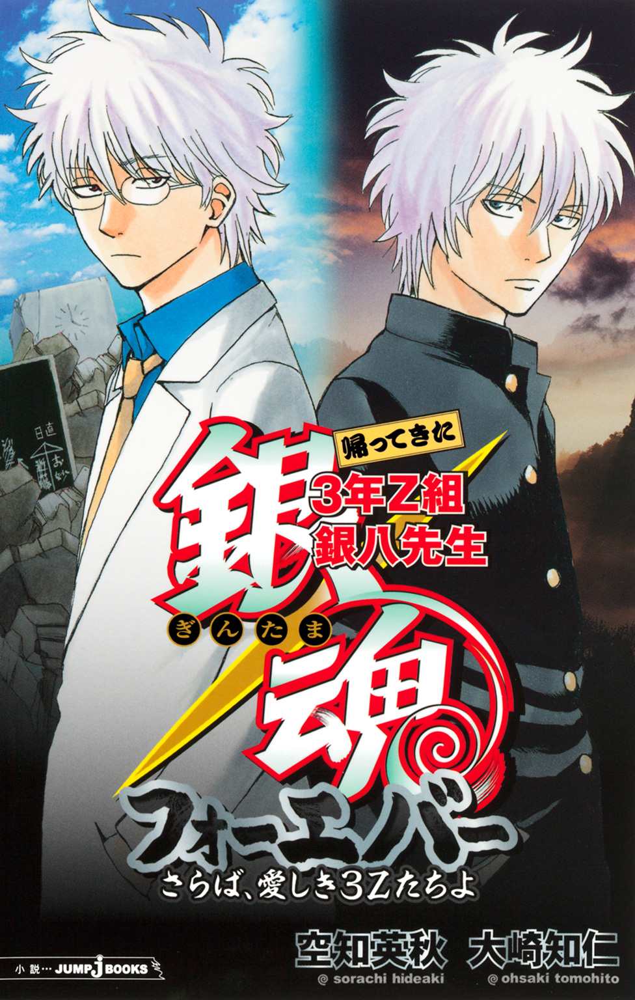
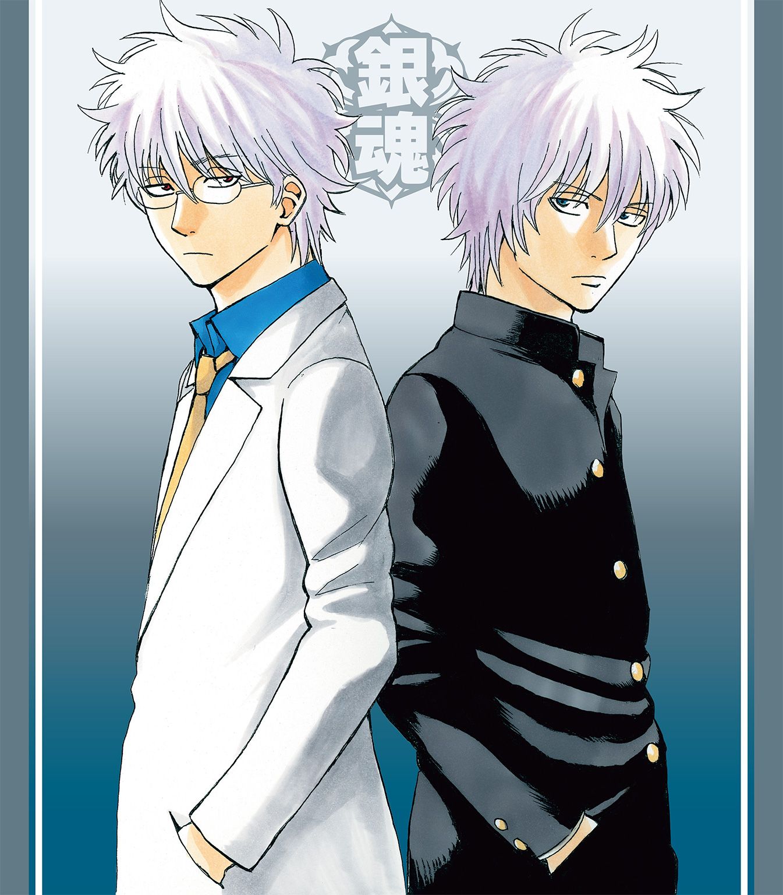
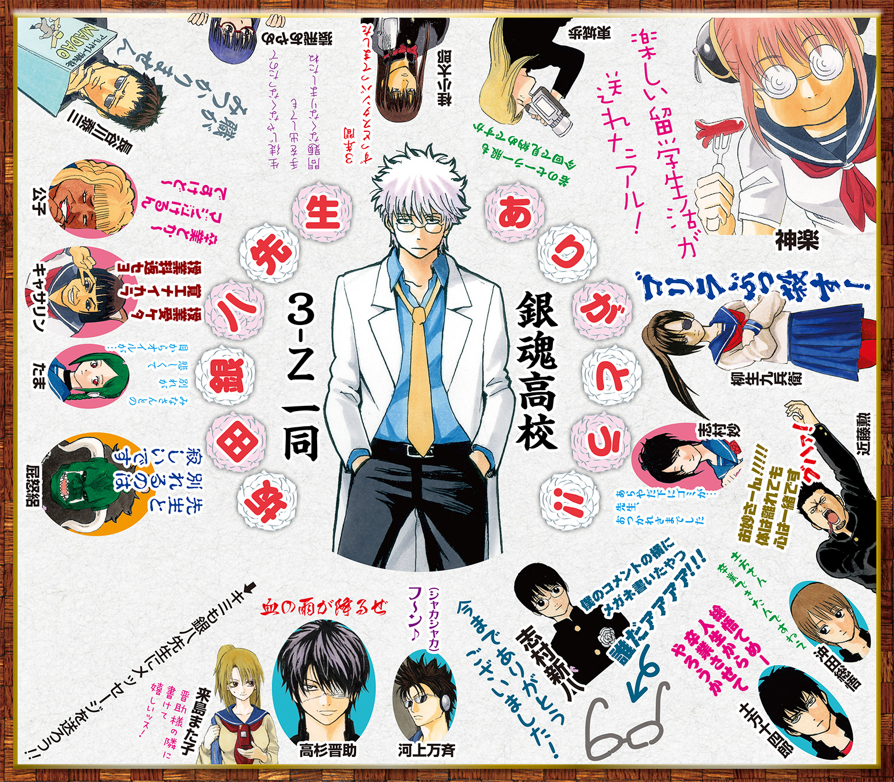
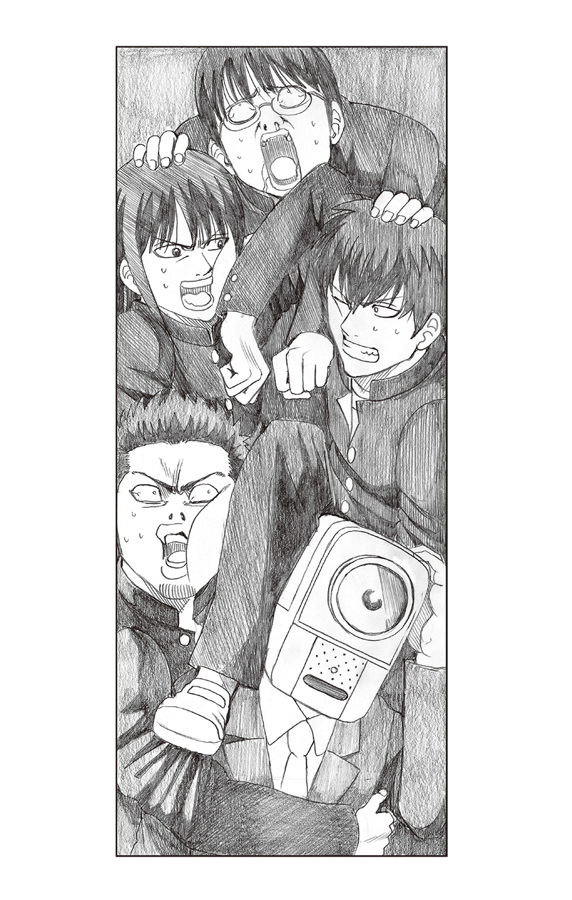
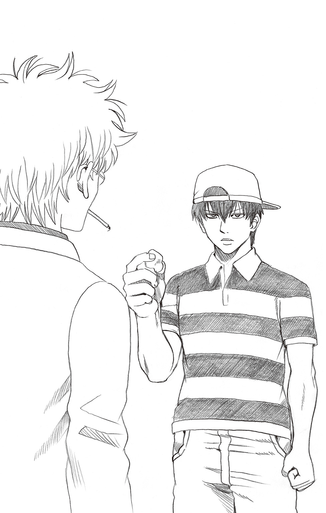
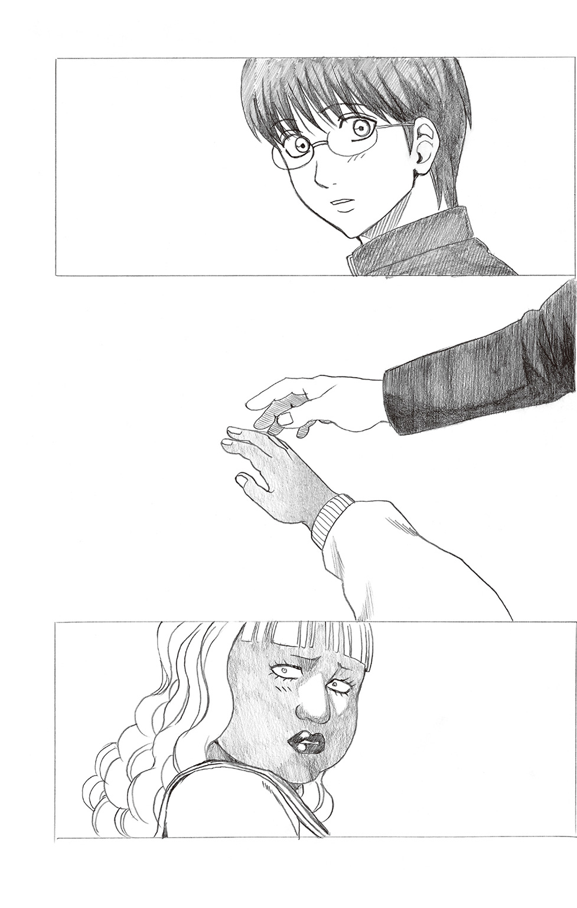
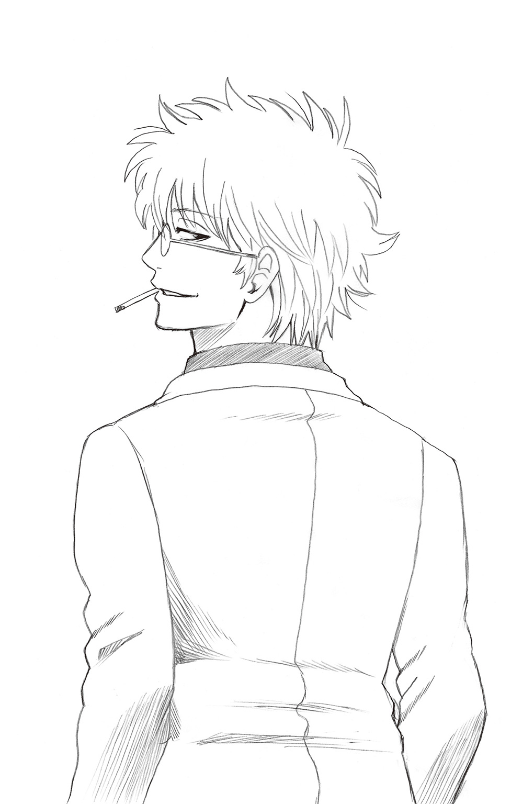

| 銀魂 帰ってきた3年Z組銀八先生フォーエバー さらば、愛しき3Zたちよ | |
| 空知英秋 & 大崎知仁 | |

この本は縦書きでレイアウトされています。
また、ご覧になる機種により、表示の差が認められることがあります。


この作品はフィクションです。
実在の人物・団体・事件などにはいっさい関係ありません。
白衣 はい、どーも！ 白衣の銀八です！
学ラン 学ランの銀八です！
白衣 二人合わせて、銀十六です！
学ラン 足しちゃったね、八と八。
白衣 足していかないと、そこは、なんせ最終巻だから。......つーかさ、そもそもお前は、なんで学ランなわけ？
学ラン いや、なんでって......。これはだからアレだよ。白衣のあんたと対比させやすいようにだよ。ほら、劇場版で二人の銀さんが並んでただろ。
白衣 あーはいはい、現在の銀さんと、過去の銀さんが並んでたやつな。
学ラン それの銀八バージョンつーことでね。
白衣 なるほど。で、そもそもついでに、もう一つ聞くけど、そもそもなんで俺たちがここでこうやって喋ってるわけ？
学ラン これはだからアレだよ。前説的な？ 小説だから、まあ、『まえがき』的な？
白衣 なるほど。まえがき漫才みたいな。
学ラン うん、そういうことでいいんじゃない。
白衣 だったら、この本の内容について、軽く説明しときますか。
学ラン はい、しときますか。
白衣 えーと、この本は、銀八シリーズの最終巻で、ショートショートが九本入ってまーす。
学ラン 入ってまーす。
白衣 一つひとつが独立したお話ですが、続けて読むと一本の長編になってるという仕掛けはございません。
学ラン じゃあ言うなよ！
白衣 それと今回は、たいへん残念ながら......タカティンは登場しません。
学ラン それほど残念でもねーよ！
白衣 同時発売のコミックス51巻と並べると、表紙の絵がつながりません。
学ラン つながんねーのかよ！ なんで言ったんだよ、わざわざ。
白衣 あと、相変わらず、著者近影の大崎は、一点を見つめたままでーす。
学ラン ほっといてやれよ！ 七年間あのままなんだよ、あいつは！
白衣 それから、子どもの頃嫌いだった食べ物が、大人になってから食べられるってことあるよね。
学ラン 銀八の話は!? つーか待て待て！ せっかく学ラン姿のレアな俺がいるってのに、結局役回りは新八と同じツッコミ役じゃねーか。
白衣 え、なに、お前もボケたいわけ？ 七年間、３Ｚを率いて、ボケもツッコミも両方こなしてきたこの俺をさしおいて、学ラン姿ってだけで、特別扱いしてほしいわけなの、お前は？
学ラン や、なにもそこまで......
白衣 じゃあいいですよ。どうぞボケてくださいよ。最終巻の幕開けにふさわしい、抱腹絶倒のボケ、全国八億七千万人の銀八ファンが爆笑するようなボケ、おみまいしてくださいよ。
学ラン そんなにいねーよ銀八ファン！ つーか結局お前がボケてんじゃねーか！
白衣 わかったよ、俺はもうボケねーから。お前、なんかボケてみ。
学ラン 偉そうに、上からモノ言いやがって。つーか、こんな流れでボケたって、ウケるわけねーだろ。
白衣 だったら、いいよ。来週またここに集まろうぜ。で、そん時にボケてみろよ。
学ラン めんどくせーよ！ なんでわざわざ再集合しなきゃいけねーんだよ。
白衣 なんでって......銀八は今回で最終巻だから、再集合ってことで。
学ラン なぞかけ、雑だなオイ！ 最終巻と再集合。「かん」と「ごう」で音がそろってねーから、もやっとするわ！
白衣 もういいんだよ、俺がボケるから。役割は固定しとこうぜ。白衣と学ランで、白黒はっきりつけとこうぜ。
学ラン 急にうまくなんじゃねーよ！ 雑ななぞかけの後、急に上達してんじゃねーよ！
白衣 あ、それはそうと、やべえな。
学ラン やべえ？ なにが？
白衣 まえがき漫才の時間、そろそろ終わりに近づいてるみてーだわ。
学ラン え、もう？
白衣 お前、最後に言い残したことはねえか？
学ラン なんで死ぬみたいになってんだよ。......じゃあ、お互い一言ずつ言って終わろうぜ。
白衣 わかった。じゃあ、お前から。
学ラン えーと、『銀八先生 さらば、愛しき３Ｚたちよ』を手に取ってくださった皆さん、ありがとうございます。サクッと読んで、くすっと笑っていただけたら幸いです。
白衣 終わりか？ じゃあ次俺な。......えーと、○○○○！
学ラン ？ なにそれ？
白衣 ○○○○に面白いセリフを入れて、編集部まで送ろう！
学ラン 人任せかよ！
白衣 それでは、本編をお楽しみくださ〜い。
深夜だった。
銀魂高校は、当然のことながら静まり返っていた。
いや――足音がする。廊下を、誰かが歩いている。
足音は、３Ｚの教室の前で止まった。引き戸が開き、するりと教室に体を滑りこませたのは、映画泥棒だった。
頭がカメラ、体は黒スーツの、パントマイムをするあいつだ。
深夜の教室に忍びこんだ映画泥棒は、独特のクネクネした動きで教室の中をうろついている。
映画泥棒が、本当の泥棒でもはたらくつもりなのだろうか。
その時だった。
廊下から別の足音が近づいてきた。
映画泥棒は焦った。もし足音の主がこの教室に入ってきたら、まずい。
隠れよう、と映画泥棒は思った。どこに？ 誰かの机の下......は、ちょっと怖い。教室の電気をつけられたら、一発でバレてしまう。教卓の下......も、ちょっと不安だった。覗きこまれないとも限らない。
迷っている間にも、足音はどんどん近づいてくる。
決めた。掃除道具入れの中だ。
教室の隅にある、木製のロッカー、そこに映画泥棒が飛びこむのと同時に、３Ｚの教室に一人の男子生徒が入ってきた。
近藤勲だった。
なぜ、深夜の教室にゴリラが？ という問いは、愚問であろう。普段の行状から、ゴリラの魂胆は見えすぎるほど見えている。
お妙さんの机とか椅子とか縦笛とかジャージとかになにかしようというのだ。
教室に忍びこんだ近藤は、懐中電灯を手にしていた。その明かりを頼りに、お妙さんの席に近づくと、
「お、おた、おたた、おたたたたたた......」
と、お妙百烈拳みたいな感じで興奮しながら、お妙さんの椅子に自分の頰を寄せていった。お妙さんの椅子の座面が、欲情ゴリラの頰ずりで汚されんとする、まさにその時だった。
廊下から足音が聞こえてきた。
ぎくり、と近藤は身を強張らせた。まずい。こんなところを誰かに見られたら、なんの申し開きもできない。ほっぺで椅子の材質をチェックしていましたなどと言おうものなら、
――信じられるわけねーだろ！
――つーかそれ、小説版一巻で使った言い訳だろ！
と、ボコボコにされるのがオチだ。
隠れねば、と思った。どこに？ 机の下？ 違う。教卓の下？ 不正解。ここは掃除道具入れがベストだ。
というわけで、近藤は掃除道具入れの扉を開けた。
が、そこにはすでに映画泥棒がいた。
うおっ!? と声を上げそうになったが、すんでのところでこらえた。
なんだコイツは？ なんでこんな奴が夜の教室の掃除道具入れに？ と思ったが、今は自分の身を隠すほうが先決だ。
近藤は、先客のいる掃除道具入れに入り、扉を閉めた。
それとほぼ同時に、三人目の人物が教室に入ってきた。
志村新八だった。
こんな真夜中に、誰もいない教室で、地味な眼鏡の少年がなにをするというのか。
無人島と思しき島に流れ着いた時、勢いで裸になった過去を持つ新八ではある。が、まさか、深夜の教室でそんなことはしないだろう。
教室に入ると、新八はまず電気をつけた。蛍光灯の白い明かりが、教室を満たす。
新八は、手に一冊の雑誌を持っていた。手近な机の上にその雑誌を置くと、雑誌の中ほどにあった袋とじを開け始める。
袋とじの表には、こう書いてある。
『限界セクシー！ 寺門通の、ここまで見せちゃっていいのかしラスクは飲み物ないと死ぬ』
なるほど。家では開けにくい、エッチな袋とじを、真夜中の教室で開けようということらしかった。
なんというか、やることがいかにも童貞くさい新八である。でもって、ついでに言っておくと、寺門通は数年後には限界セクシーどころの騒ぎではなくなっているのだが......ま、それはまた別のお話である。
さて、新八がハサミを使って、丁寧に袋とじを開けようとした、まさにその時だった。
廊下から足音が聞こえた。
ぎくっ、と新八は身を強張らせる。
まずい。こんなところを見られたら、めっちゃ引かれてしまう。ムッツリの烙印を押されてしまう。
隠れねば、と思った。
どこに？ 掃除道具入れだ、と新八は即断した。
掃除道具入れに駆け寄り、扉を開ける。と、腰を抜かしそうになった。中には二名の先客がいたからだ。
映画泥棒と近藤勲。
ど――どうしてアンタらが。つーか、頭がカメラの奴、誰？
と思ったが、今は身を隠すほうが先だった。
新八は掃除道具入れに体を押しこんだ。すでに二人いるところへ入るのだから、もうぎゅうぎゅうである。体は密着するが、そんなことにはかまっていられなかった。
新八が中に入り、扉を閉めたところで、四人目の男が教室に入った。
土方十四郎だった。
土方は、教室の明かりがついていることに一瞬戸惑いを見せたが、電気を消したりはしなかった。
深夜の教室に、土方がなんの用だろうか。
煙草だろうか、という予想もあるかもしれない。本編『銀魂』ではヘビースモーカーの土方だが、高校設定の銀八シリーズでは吸っていないことになっている。が、その辛抱ができずに、夜な夜な教室で一服、というパターン。
だが、それは違った。
土方は雑誌を一冊持っていた。手近な机の上にその雑誌を置くと、付録の袋とじを開け始める。
袋とじの表には、こうある。
『限界ヘルシー！ お料理通の、ここまでおいしいマヨネーズがあっていいのかしラーメンマンのお父さんはソーメンマン』
――いや、どんな袋とじだよ！
――マヨネーズの紹介記事？ だったら別に袋とじにしなくてもいいだろ！
――あと、わざわざ夜の教室で開けなくてもよくない!?
というツッコミを、掃除道具入れの中にいる三人は入れたかったのだが、声を出すわけにはいかない。
で、土方がハサミを使って袋とじを開けようとした、まさにその時だった。
また廊下から足音が聞こえた。
土方は焦った。まずい。こんなところを誰かに見つかったら、おいしいマヨネーズの情報が学校中に広まってしまう。
いや、心配するポイントが、ちょっと間違ってるような気がしたが、まあいい、とにかく土方は焦った。そして、隠れねば、と思った。
明るい教室で身を隠すには、掃除道具入れがベストだ。
土方はすぐに決断すると、掃除道具入れに駆け寄り、扉を開けた。
「―――！」
驚愕は、当然である。狭い掃除道具入れの中に、すでに三人の男がぎゅうぎゅう詰めになっていたのだ。映画泥棒と近藤と新八。
無理無理！ もう満員！ ほか当たれ！
先客三人の心の声が聞こえたが、今更隠れる場所の変更は無理だ。足音はどんどん教室に近づいてくる。
土方は、しょーがねえだろ！ という顔で、ぐいぐいと掃除道具入れに自分の体を押しこんだ。
限界というなら、この状態が限界であった。掃除道具入れの中に、四人の男。「限界くるしー！」である。
土方が、それでもなんとか扉を閉めたところで、五人目の人物が教室に入ってきた。
桂小太郎である。
カオス野郎が深夜の教室になんの用だろうか。
桂は教室に入ると、手にしていた雑誌を机の上に置いた。どうやらこいつも袋とじを開けにきたらしい。
桂はハサミを使って袋とじを開けた。すると、中にもう一つの袋とじが入っていた。その袋とじを開けると、中にまた袋とじがあった。開けると、さらにまた袋とじが。それを開けると、さらにまた。延々と袋とじが続く。要するに雑誌一冊丸ごと袋とじみたいな状態になっているのだった。
週刊フクロトジ、という名前の雑誌だった。
――どんな雑誌だよそれ！
――しかも週刊て、結構なペースで出んのな！
掃除道具入れの中の連中は、声には出さず、心の中でつっこんだ。
桂が次々に袋とじを開けている時だった。廊下から足音が聞こえた。
まずい、と桂は思った。こんなところを誰かに見つかったら、袋のネズミだ。応援を呼ばれて、袋叩きにされたうえに、家に電話されてお袋を呼ばれてしまうかもしれない。いや、袋袋うるせーよ、という感じの桂だったが、ともかく隠れる場所を探した。
掃除道具入れだ、と桂は即決した。教室で隠れる所となると、どうしてもここになってしまうのだ。
掃除道具入れに飛びつき、扉を開ける。と、中はすでに四人の男でパンパンになっていた。
お前ら！ 愕然とする桂。そして、先客四人は激しくかぶりを振って、無理無理無理！ さすがにもう無理！ もう隙間ない、とアピールするが、それでも桂は強引に中に入っていく。
狭いロッカーに五人である。全員が立っているのは無理だった。一人はしゃがみ、誰かはその上に立ち、さらに背を丸めて、と各人が工夫して、なんとか五人が収まった。こうなるともう、一台の電話ボックスに何人入れるかギネスに挑戦、みたいなバカ企画のノリになってくる。

で、桂が扉を閉めるやいなや、教室に入ってきたのは、東城歩だった。
夜の教室に東城がなんの用か、という問いは、近藤の時と同様愚問だろう。
東城は、予想を裏切らず、九兵衛の席に歩み寄った。九兵衛の机か椅子か縦笛かジャージになにかするつもりなのだ。
「わ、わか、わかかかかかか......」
若百烈拳みたいな感じになりながら、東城は興奮した面持ちで、九兵衛の椅子にレースの飾りをつけた。
どうやら椅子をゴスロリ風にしたかったようだ。
――いや、なにしてんのそれ！
掃除道具入れの連中は、苦しい姿勢のまま心の中でつっこんだ。
――本人をゴスロリにしたくても拒否られるから、椅子をゴスロリにしてんじゃん！
――なにその歪んだ精神！
その時だった。また廊下から足音が聞こえた。
まずい！ 東城は慌てた。こんなところを誰かに見つかったら、ローションまみれにされたうえに、カーテンレールでケツを百叩きされてしまう。いやそれはもうお前が望んでるプレイだろ、という感じの東城も、当然ながら隠れる場所を探した。
で、当然のように掃除道具入れに目をつける。
扉を開けた瞬間、東城はその細い目を見開いた。すでに中は五人の男でギッチギチになっていたのだ。
もう無理！ もうこれギネスだから！ もう入れないから！
五人の先客たちは揃って懇願したが、東城は強引に入ろうとした。いけるいける。そこ詰めて隙間作ればまだいける。バカもう無理だって。囁き声でそんなせめぎ合いをやっている時だった。
新八が外に弾き出された。そして、新八のいなくなったスペースに東城がするりと入りこみ、扉がパタンと閉められる。
一秒後、新八はパニックになった。
――オイィィィィィ！ 出てる出てる！ 僕、はみ出しちゃってるから！ 見つかっちゃうから！ 入れて入れて！
だが、掃除道具入れの扉は、中で誰かがしっかりと取っ手を引っ張っているのか、びくともしなかった。
――ちょ、まずいって！ 来てるから！ 誰か来てるから！
だが、新八の懇願も届かず、そこへ足音の主が到着した。
教室に入ってきたのは、沖田総悟だった。
「お......電気がついてたから、誰かいるかと思ったら、誰もいねえようだな」
沖田は呟くと、土方の席に近づいた。
なにをするのかと思えば、こんなこと――椅子に画鋲を貼りつけ、机に彫刻刀でちょっとだけ傷をつけ、机の中にエロ本の切り抜きを入れる。
沖田は一連の仕掛けを終えると、満足そうに笑い、そのまま教室を出ていった。
掃除道具入れの扉が開き、
――いや、地味な嫌がらせだなオイ！
というツッコミは土方である。机に傷がついてたらプリントに字ぃ書く時破れやすいけども！
――いや、てゆーか！
というツッコミは新八である。
――それ以前に、僕、まったく気づかれなかったんですけど!? 思いっきり姿さらしてたのに、沖田さん、僕にまったく気づきませんでしたよ！ キセキの世代ですか僕の存在感のなさ！
そこへまた別の足音が聞こえてきて、新八は焦る。
――ちょ、今度こそ入れてくださいよ！
だが、中の五人は非情だった。新八のための場所を空けてくれない。
だから無理だっつってんだろ！ よそいけ、よそ！ お前はそこのカーテンにでもくるまってろ！ つーか、お前はキセキの世代だから、次もバレねーって！
入れろ、だめだ、お前が出ろ、うるせーお前だ、と、新八たちはもめまくる。誰かが押して、誰かを引っ張って、そうやってもめているうちに、とうとう――
バタバタバタッ――と全員が掃除道具入れから溢れ出してしまった。
八人目の足音の主が教室に入ってきたのは、ちょうどその時だった。
「あんたたち、なにやってるアルか」
八人目の来訪者は神楽だった。
「や、なにって......、ちょっと袋とじを開けようと......」
新八が気まずそうに言うと、土方と桂も続いた。
「ああ、俺も、袋とじを......」
「俺も、袋とじの中の袋とじの中の袋とじの......」
「どんだけ袋とじ好きアルか、あんたたち」
神楽がつっこむと、近藤が言った。
「待てよ、俺の用事は袋とじなんかじゃねーぞ。俺は正々堂々お妙さんの椅子に頰ずりしにきたんだよ」
「正々堂々の意味、辞書で引いたほうがいいアル」
「私だってそうだ」
東城も言う。
「私も正々堂々、若の椅子をレースで飾りつけようとしたんだ」
「アンタにいたっては、辞書を引くより、辞書で頭を殴って正気にさせないといけないアル」
「てゆーか、神楽ちゃんのほうこそ、こんな夜中に、教室になんの用なんだよ？」
と、今度は新八が言う。すると神楽は、
「私はただ、筆箱を忘れたから取りにきただけアル」
「いや普通！」
新八は拍子抜けする。
「神楽ちゃん、そこは、週刊スコンブの袋とじに入ってる、限界ヘルシーな酢昆布を食べにきたアル、とかじゃないの？」
「なんでそんなこと、お前に決められないといけないアル」
「つーかよ」
と、そこで近藤が再び口を開く。
「袋とじなんざ家でやってくれよ家で。こっちはこの教室でしかできないことやりにきてるんだからよ」
「いかにも、近藤殿の言う通り」
と、東城も同意する。
「あのな、変態二人に説教されたくねーんだよ、こっちは」
土方が言い返すと、そこに桂が同意する。
「いかにも、土方殿の言う通り。夜の教室で袋とじを開ける喜びなど、貴様らにはわかるまい」
「いや、お前に賛同されても嬉しくねーわ。仲間ヅラしないでくれる？」
土方が冷ややかに言うと、
「ヅラじゃない！ 桂だ！」
と、久々にシンプルな返しの桂。
そこへ近藤が、
「おいおい、誰が変態だよ。椅子に頰ずりなんて、健全な男子なら高校三年間で何回かやるだろ」
「やらねーんだよ、普通は！ つーかアンタは風紀委員長だろうが！ 自覚を持て自覚を！」
土方が声を荒らげると、新八が慌てて、
「ちょっと皆さん、夜中に大声出しちゃだめですよ」
「常識人ぶるなよ、ムッツリ」
ぼそりと言った神楽に、
「ムッツリ言うなあァァ！」
新八がでかい声で返す。
「とにかく、俺は変態じゃねえ！」
「うるせえ、変態だ！」
「ええい、このまま言い合っていても袋小路に入るばかりだ！」
「袋袋うるせーんだよアンタは！」
という感じで、ワーワーギャーギャー言い争いがヒートアップしていき、そしてとうとう――
「だーもう！ うるせーんだよてめーら！ 俺から言わせりゃ、てめーら全員同類だ！」
カメラのかぶり物を脱ぎ捨てて銀八が叫んだ。
「袋とじだろうが、椅子に頰ずりだろうが、椅子ロリだろうが、夜中に教室忍びこんでる時点で、てめーらは全員校則違反なんだよ！ とっとと家けえれ！」
銀八が怒鳴り、その一秒後だった。
「いや、アンタが言うなァァァ！」
生徒たちの声が揃った。
アンタだって夜中の教室に忍びこんでんじゃねーか！ しかも、映画泥棒のコスプレまでしてよ！
ブーイングの嵐が一区切りつくと、改めて新八が聞いた。
「てか、先生。なんでまた、そんな格好でここにいたんですか？」
「や、なんでってお前......パントマイマー目指そうと思ってよ。こっそり練習しようかと」
「はあ？」
「だってお前、終わる終わるつって、しぶとく続けてきたこの小説版シリーズも、今回でほんとに終わるんだろ？ だから教師の次の仕事として、パントマイマーもいいかなって」
「いや、いいかなって......」
戸惑う新八の前で、銀八はにやりとして続ける。
「それによ、こうやって細身の黒いスーツ着てパントマイムやるなんて新しいじゃねえか。ただまあ、一人よりコンビの活動のほうがいいかな。モヒカンにしてサングラスかけてもいいかも」
「それ明らかに、『が〜まるちょば』パクる気だろ！」
「よい子のみんな！ 銀八シリーズが終わったら、次は新シリーズ、『サイレントコメディー 坂田銀パントマイマー』だ！ 応援よろしくな！」
「勝手な告知してんじゃねえェェェ！」
深夜の銀魂高校は、まあ結局こんな感じでやかましいのだった。
「えー、というわけで、『劇場版銀魂 完結篇万事屋よ永遠なれ』は、前回の劇場版を超える、大ヒットだ。まだ観てないというきみは、劇場へＧＯだ。そして、もう観たよというきみも、あと二回くらい劇場へＧＯだ。んで、のちのちＤＶＤとかブルーレイになったら、そちらも購入してくれよな。じゃ、今日は以上。日直号令」
と言って、銀八は帰りのホームルームを締めくくろうとした。
「いや、ちょっと」
と、止めるのは新八である。
「なんのホームルームですかコレ。もっとちゃんとした連絡事項とかないんですか？」
「無え！」
「言い切ったよこの担任！」
「つーかよ」
と銀八は教室なのに煙草をくわえる。
「今回の小説版自体、映画に合わせて企画されたもんなんだ。書店の店頭を銀魂で染めたいっつー出版社の思惑でよ。だったら小説版の中で普通にホームルームしたってしょうがねえだろ。映画の宣伝しときゃ、誰からも文句出ねえだろうし」
「いや、そうかもしれませんけど、そんなあからさまに実情言わなくても......」
「なにごともオープンが一番なんだよ。つーわけで、号令も省略だ。解散！」
銀八は言って、教壇を降りようとした。が、それを、
「先生！ ちょっといいすか！」
近藤が挙手して止めた。
「どーしたゴリ。バナナの特売日がいつかなんて俺は知らねーぞ」
「いえ、バナナの特売日もお妙さんのあの日も、俺は自分でチェック済みです」
「どの日だァァ！」
とりあえずお妙に殴られる近藤。顔を腫らした状態で改めて続ける。
「先生、劇場版のことで俺、ちょっと言いたいことあるんですけど」
「なんだ？」
「どうして、銀八シリーズの劇場版がないんすか！」
机を叩き、近藤は熱っぽく言った。
銀八は片眉を上げる。
「銀八シリーズの劇場版だ？」
「そうすよ。だって、これで七冊目なんですよ、銀八シリーズの本。こんなに続いたんなら、せめて一本でいいから銀八シリーズの劇場版も作ってほしいすよ！」
近藤のこの意見は、珍しく他の生徒たちの賛同を得られた。
そうだそうだ、一本くらい、いいじゃねえか、低予算の単館上映でもいいからよお、なんて声があちこちから飛ぶ。
「なるほどな。銀八シリーズの劇場版か。......ゴリラにしちゃ、ナイスな提案じゃねーか」
銀八は煙草をケータイ灰皿に押しこんで消すと、教卓に戻った。
「いや、お前に乗っかるわけじゃねーがな、実は俺も常々、銀八シリーズの劇場版が一本くれえあったっていいじゃねえかとは思ってたんだ。東映アニメフェアみてえによ、劇場版の銀魂と、劇場版の銀八が二本立てっつーのも豪華な話じゃねえか」
「や、確かに豪華ですけど......でもアニメはもう終わっちゃうわけですし、さすがにサンライズさんも銀八の劇場版を作ろうとはしないんじゃないですか」
新八がやんわり言うと、銀八はかぶりを振る。
「ぱっつぁん、信念は岩をも砕くぜ？ もし俺たちが、劇場版銀八のナイスな企画書出したら、偉い大人たちも動いてくれるかもしれねえ。違うか？」
「企画書、ですか」
「ああ、ちなみにその企画書だが、ここにもう用意してあんだけどな」
そう言って、銀八は教卓の中からフリップの束を取り出す。
「いや、あるんですか！ てか、あるんじゃないかと薄々は思ってましたけど！」
「というわけで！ 今から緊急プレゼンコーナーだ！ 俺が考えてきた劇場版銀八の企画、とくと見やがれ」
終わろうとしていたホームルームが、なぜか企画会議みたいになってしまったが、これも３Ｚではよくあること。
銀八は教卓にフリップを立てて、さっそく始めた。
「タイトルはズバリ！」
『劇場版銀八 完結篇 ３Ｚよ永遠なれ』
「ちょ、先生これ、本編の劇場版のタイトル、丸パクリじゃないですか」
新八はつっこむ。が、銀八は気にしない。
「いいんだよ、姉妹編なんだから似てても。ちなみに内容はだ――」
銀八はフリップに描かれたイラストを何枚も見せながら説明した。
――五年後の銀魂高校にタイムスリップした銀八は、そこで意外なものを目の当たりにする......！
五年前と変わらず、水の出が悪い職員用のトイレ。
五年前と変わらず、塗装の剝げた渡り廊下の手すり。
五年前と変わらず、体育館の天井に引っかかっているバレーボール。
五年前と変わらず、さっさと売り切れる購買部のコロッケパン。
銀八は、それらの光景を見つめて、一人こう呟くのだった。
「......なにも変わらねえな、この学校」
完
「『完』じゃねーよ！」
新八のツッコミの声がでかくなる。
「『Ｆｉｎ』のほうがよかったか？」
「いや、そういうことじゃなくて！ 内容ですよ内容！ なんですかコレ、なにも事件起こらないじゃないですか！」
「事件ってお前......」
銀八はだるそうに頭をかく。
「もうさ、そういうのはいいんじゃね？ 本編でさんざん切った張ったやってんだからよ。銀八の劇場版くらい平和にいこうぜ」
「平和すぎてもだめでしょ。なにか起きないと」
「新八の言う通りだ。そんなんじゃだめっすね」
という声は、土方だった。
「なんだ、マヨ方、文句あんのか」
「ありますよ。......先生、銀八シリーズの劇場版だからって、なにも先生が主役になんなくてもいいんじゃないすか」
「あん？」
土方は立ち上がると、机の中からフリップを取り出して、続けた。
「実は俺も考えてあるんすよ。劇場版の企画をね」
ほう、と銀八は不敵に笑う。
「おもしれーじゃねえか。じゃあここでプレゼンしてみろよ」
「わかりました」
土方は言うと、フリップを手に教壇に進み出た。
教卓にフリップを立て、説明を始める。
「俺の考えてきた劇場版のタイトルは、ズバリ！」
『劇場版土八 完結篇 マヨネーズを延々塗れ』
「ボツ！」
即座に銀八が言う。
「もうタイトルの時点で、ねーよ。土八？ 土曜の八時ですか？ サブタイも意味わかんねーしよ」
「サブタイはストーリーと関係してるんですよ」
「ストーリーと？」
――サンドウィッチ屋にアルバイトとして入った土方十四郎は、バイトリーダーから言われたのだった。
「土方、お前はパンにマヨネーズを延々塗ってろ」
完
「なにがおもしれーんだよ、このストーリーの！」
自分のことは棚に上げて、銀八はつっこむ。
「お前のバイト話なんか、わざわざ映画館で観たくねーんだよ。ボツだボツ」
土方はチッと舌打ちして教壇を降りる。
「だったら、次は俺ですかね」
と、入れ替わりに立ち上がったのは沖田総悟だった。その手にはやはりフリップがある。
「ほう、お前も企画あんのか？」
「俺のは先生や土方さんのと違って、刺激に満ちてますぜ」
「上等じゃねーか」
聞いてやる、と銀八が言い、今度は沖田が教壇に立った。
沖田はフリップを教卓に立て、
「俺の考えたタイトルはズバリこれ！」
『劇場版沖八 入門篇悦んでＳＭなれ』
「ただのピンク映画じゃねーか！ よい子に観せられねーよ！」
「まま、そう言わずに、ストーリーも聞いてくださいよ」
沖田は言うと、別のフリップを見せた。おっさんが三角木馬で嬢にしばかれている絵である。
――ピシッ、ピシッ、ピシッ！
完
「擬音のみかよ！ ストーリーの説明どこいった！」
「ちなみにこれ、入門篇のあと、中級篇、超絶技巧篇に続くんですけど」
「続けなくていいんだよ！ あと、中級篇の次が超絶技巧篇って、飛びすぎじゃね!?」
「じゃあ先生、今度は私のを見てください」
と次に席を立ったのは、猿飛あやめ――さっちゃんだった。
銀八はため息をつき、
「まったくいい予感しねーけど、ま、一応見るわ」
ということで、沖田と入れ替わりにさっちゃんが教壇に立つ。
「私のタイトルはズバリこれ！」
『激情版さっ八性癖変 メス豚よ私はメス豚よ』
「結局ピンク映画じゃねーか！ つーか『さっ八』ってなに？ 猿八でよくね？」
「先生、ストーリーも聞いてください」
さっちゃんが食い下がる。
「ストーリーだあ？」
――ピシッ、あうっ、ピシッ、あうっ、ピシッ、あうっ！
完
「変わってねーじゃねえか、さっきと！ 歓喜の声が加わっただけだろ！ もうお前のは沖田のと二本立てで、場末のピンク映画館でやってこい！」
「こうなったら、俺のを見てもらうしかないな」
と、ここで起立したのが桂だった。
桂はさっちゃんと交代して教壇に立つと、フリップを見せた。
「俺のタイトルは、ズバリこれ！」
『３ＤＳ版ヅラ八 そして取説へ...』
「ゲームじゃねーか！ せめて映画前提でボケろよ！ あとサブタイ、なんかイラっとくるわ」
つっこむ銀八に、桂は抗議する。
「先生、一応ストーリー聞いてください」
「あんのかよ、ストーリーなんか」
――メガドライブ版来春発売
完
「ただの告知じゃねーか！ あと、いまさらメガドライブ版出すなよ！」
「ＰＣエンジン版のほうがよかったですか？」
「てゆーか、お前をバンバン殴りたい、分厚い石版とかで！」
桂が引っこむと、今度は隣のクラスから服部全蔵までやってきた。
「やっぱり３Ｚには任せちゃおけねえな」
「なんでてめーまでしゃしゃり出てくんだよ」
「まあ聞けよ。俺の考えた劇場版はこれだ」
服部は言うと、フリップを見せた。
『劇薬版全八浣腸篇座薬、えーのんない？』
「結局お前の痔の話だろコレ！ あと、『永遠なれ』を『えーのんない？』っていう関西弁に置き換えてるところ、ちょっと腹立つ！」
「ならば、ここはわっちの出番じゃな」
と、そこへ、どこからともなく白衣の月詠先生が現れる。
月詠の見せたフリップは、
『ヌルヌルＢＡＮＧ！ 月八 えーか？ えーのんか？』
「ヌルヌルＢＡＮＧ！ ってなに!? ヌルヌルはローションのこと？ ヌルヌルになったあと撃たれたの？ サブタイの関西弁もやらしいし！」
「お前らいい加減にしろよ！」
と、ここで近藤が立ち上がる。
「企画なら、もっと真面目なのを出せよ。俺みたいに！」
近藤は言って、フリップを見せた。
『野生の王国 ゴリラの生態』
「主旨変わってんじゃねーか！ つーか、ここまでタイトル変えられたら、あとの奴ボケられねーだろ！」
「じゃあ先生、これはどうですか！」
と、次に立ち上がったのが、ふたたび桂だ。
『ゲームボーイ版ヅラ八 はやく取説を...』
「どんだけ取説読ませたいんだよ！ そんなに複雑なゲームなのコレ？ てか映画の企画だっつってんだろ！」
「ダッタラ、コレハドウデスカ？」
と、次にフリップを見せたのがキャサリンだ。
『海賊版銀魂 完結篇 万事屋よ永遠なれ』
「普通に海賊版なんじゃねーか！ まさしく映画泥棒の話じゃねーか！」
もういい、ここまでだ、と銀八は教卓を叩いて言う。
「てめーらの大喜利につき合ってやるほど、こっちも暇じゃねえんだよ」
「いや、けっこうつき合ってましたけど......」
と、ぼそりと言うのは新八である。
銀八はため息をつくと続けた。
「......ま、せっかくの劇場版だ。おめーらが、俺が俺が状態になるのもわからんでもない。しかしここは、俺の顔立てて、俺の企画でいかせてくれや」
「でも、先生の企画のやつは、なにも事件起こらないじゃないですか」
新八が指摘すると、
「さっき紹介したストーリーはプランＡだ。ちゃんと事件が起こるプランＢも一応考えてある」
「最初からそっち紹介してくれればいいのに......」
新八の呟きを無視して、銀八は新たなフリップを教卓に立てた。
「んじゃ、改めて俺の案を紹介する。これだ」
『劇場版銀八 完結篇 ３Ｚよ永遠なれ』
――五年後の銀魂高校にタイムスリップした銀八は、そこで目を覆いたくなるような光景に遭遇する。
教室のドアの前で、頭を真っ白に染めて倒れている近藤......。
体育用具室で、頭を真っ白に染めて倒れている土方......。
学食の厨房で、頭を真っ白に染めて倒れている神楽......。
これは一体なんだ......？ なにが起こったというのだ......？
まさか、白詛......。銀八ワールドにも、白詛の呪いが......!?
銀八はたった一人で調査に乗り出し、驚きの事実を摑む。
近藤は、お妙さんにセクハラ発言をし、黒板消しでぶん殴られて気絶していたのだ。頭が白くなっていたのは、チョークの粉のせいだった!!
土方は、体育用具室で沖田にライン引きでぶん殴られて気絶していたのだ。頭が白くなっていたのは、ライン引きの粉のせいだった!!
神楽は、厨房で盗み食いしようとして滑って転び、小麦粉を頭からかぶっただけだった!!
真実に辿り着いた銀八は、屋上で遠くを見つめて、一人呟くのだった。
「白詛じゃなくて、よかったね、みんな」
完
「どうだコレ」
と言った銀八に、３Ｚの全員が声を揃えた。
「ボツ！」
「血塗られたその姿、まさしく白夜叉よ。同胞を護らんがため、修羅の道をゆくか。だがお前のその禍々しき手は、いずれその腕に抱いた尊きものまで、粉々に握りつぶすだろう。それが、鬼の背負いし業よ。愛する者も、憎む者も、すべて喰らい尽くし、この星でただ一人、哭き続けるがいい――」
その日、銀八は、３Ｚの教室に入った途端驚いた。
朝のホームルームの時間である。教室が異様に騒がしかったのだ。いや、３Ｚが騒がしいのは毎度のことで、静かだったら、かえってそっちのほうが不気味なくらいなのだが、その日の騒がしさは、普段とは違っていた。
まず違うのは、みんなの服装だった。
セーラー服と学ランではない。みんな、私服だった。それも、小学生が着るようなやつだ。男子は半ズボンで、キャップを後ろ向きにかぶったり、女子も女子で、子どもっぽい服で、髪もおさげにしている者がいた。
――なんだこりゃ？
教室の入り口で、銀八は立ち尽くした。どうなってやがる......？
そして、そういう服装の３Ｚの連中がやっていることといったら、こうだ。
土方は机で練りケシを作っている。下敷きのうえで、消しゴムのカスや粘土や水のりなんかを混ぜ合わせ、こねくり回し、あの、用途のよくわからない練りケシを作っている。
「マヨネーズ混ぜてみよっかなー」
――混ぜるな混ぜるな。
かと思えば、
「ウキャッホウ！」
と、窓から校庭を見て叫んでいる奴もいる。神楽だ。
「みんな野良犬アルー！」
野良犬でテンションが上がるのは小学生のあるあるだ。
その一方で、東城と近藤と長谷川の三人は、教室の隅で「デコピンの研究」に余念がなかった。どうやったら一番痛いデコピンになるか、そのやり方を議論しているのだ。
「片手でやるのがいいって！」東城が言い、
「いや、両手でやるのが痛いって！ こう、弓みたいにして」長谷川が言い、
「爪の先尖らせてたら痛いんじゃね？」近藤が言い、
「そうしたら、やるほうもいてえだろ」と長谷川が言う。
おっさん三人が、そんなガキみたいなことを真剣に言い合っているのだ。
そう、今日の３Ｚは、全員がガキ――小学生みたいになっているのだった。
山崎は鉛筆サイコロで自作のスゴロクに熱中しているし、沖田は教科書の余白にパラパラ漫画を描いている。クソ豚野郎が延々ムチで打たれるパラパラ漫画だ。
――いや漫画の内容！
河上万斉は高杉晋助に、「明日のマラソン大会、一緒にゆっくり走ろうでござる」などと持ちかけている。
――絶対破られるよその約束！
キャサリンは、今日が13日の金曜日だと知って、意味もなく騒いでるし、桂はノック式のボールペンを使って消しゴムを飛ばす遊びをしている。
――どうなってんだよ、これ......。
銀八は目を瞬く。
――なんでこいつら、高校生設定から小学生設定になってやがんだ？
――まさか......。
と銀八は思う。
――なんかのウイルスか？ これ......。
３Ｚでも劇場版を、なんてことを言っていたから、３Ｚワールドもウイルスにおかされてしまった、ということなのだろうか。
高校生を小学生にするウイルス。
なんじゃそりゃ、とは思うが、それ以外に目の前の状況に対する答えを思いつかない。
――そういえば、なんか今朝も夢うつつで「血塗られたその姿、まさしく白夜叉よ――」とかいう声が聞こえたし......。
その時ふと、銀八は昨日のホームルームのことを思い出した。
帰りのホームルームの時だ。私語のやまない３Ｚに向かって、
「ギャーギャーギャーギャー、いつまでもうるせえな。てめえらみてえなのは、高校生やめて小学生からやり直せ！」
なんて言った。
あの発言が、なんかこうＳＦチックな手続きを経て、ウイルスとして３Ｚに蔓延したのだ、きっと。
そんな世にも奇妙なことが起こりうるんだろうか。あのテーマ音楽とともにタモさんが現れるんじゃなかろうかと、急に心配になる銀八である。
でもって、そんな銀八の前で、教え子たちは小学生として騒ぎまくっている。
新八は、定規を机の端から飛びこみ台みたいに突き出して、それをビヨヨン、ビヨヨンと弾いて楽器みたいにしている。
お妙と九兵衛は、アルプス一万尺をやっている。
「ドーンペリ、さんまんじゃーく」
違った。ドンペリ三万弱だ。三万円弱のドンペリの歌だ。
ボールペンで消しゴムを飛ばすことに飽きた桂が、今度は音楽の教科書の裏の鍵盤を弾きながら歌いだした。
「ドーンペリ、さんまんじゃーく」
――お前もその歌かい！
そこへ女子の「きゃあ！」という声が聞こえた。
デコピン研究をしていた三人が、突然喧嘩を始めたのだった。
「お前、一回多いぞ！」
「違うって、さっきのであいこだって！」
なんか知らないうちに、デコピンのやり合いが、普通の叩き合いになって、それの回数でもめて喧嘩に発展したらしい。ガキの喧嘩によくあるパターンだ。
ただ、ガキといっても、見た目もサイズもおっさんたちだ。おっさん三人が暴れだし、教室は一気にヒートアップした。
喧嘩をあおる奴。そして、なぜか泣く女子。職員室に走ろうとする奴と、それを止める奴。みんなのリアクションも小学生だ。
「やめろ、やめろ！」
と、ここでようやく銀八は声を出した。
だが、銀八がいくら言っても、おっさん小学生の喧嘩はやまず、教室の騒々しさは膨らんでいく一方だ。
「先生、見てくれよ、俺の練りケシ」

なぜかこのタイミングで土方が持ってきてくれるが、相手にしてる場合じゃない。
「だーもう、いい加減にしやがれ！」
銀八は怒鳴って教卓を叩いた。
「静かにしろって言ってんのがわかんねえのか！ お前らに比べたら、動物園の動物のほうが、まだ言うこと聞くぞ！」
＊
「血塗られたその姿、まさしく白夜叉よ。同胞を護らんがため、修羅の道をゆくか。だがお前のその禍々しき手は、いずれその腕に抱いた尊きものまで、粉々に握りつぶすだろう。それが、鬼の背負いし業よ。愛する者も、憎む者も、すべて喰らい尽くし、この星でただ一人、哭き続けるがいい――」
はっと目を開けると、銀八は廊下に立っていた。
３Ｚの教室の前だ。手には出席簿。時刻を見ると、朝である。
「あれ......？」
一瞬、頭が真っ白になる。
状況が、よくわからなかった。なぜ自分は教室の外にいるのだろうか。
３Ｚの連中がなぜか小学生みたいになっていた。騒ぐあいつらを怒鳴った――直後、こうして廊下に立っていたのである。
銀八は首をひねりながらも、とりあえず教室に入った。朝のホームルームをやらなければならないからだ。
「よーし、お前ら席つ......」
そこで銀八の声は途切れた。
みんなの姿がおかしいのだ。小学生のような服装では、もうなかった。では、どうおかしいのか。
みんな、動物の姿に変わっているのである。ただ、完全な動物というよりは人の面影も残している。だから獣と人のミックスだ。
――ひょっとして......またウイルス？
銀八は顔を引きつらせた。
――俺が言ったから、こうなっちゃったの？
『お前らに比べたら、動物園の動物のほうが、まだ言うこと聞くぞ！』
って。
――だからまた、みんなを動物にしちゃうウイルスが蔓延しちゃったの？
――なんだよ、それ。
しかし、愚痴っても、ぼやいても状況は変わらないのだった。
で、みんながどんな動物になっちゃっているかというと――
土方はオオカミとのミックスだった。ＭＡＮ ＷＩＴＨ Ａ ＭＩＳＳＩＯＮより、ちょっと人間の成分が多いが、成立はしている。ぶっちゃけ、かっこ悪くはない。が、やっていることは練りケシ作りなのだった。
「結局練りケシ作んのかよ！」
ほかの生徒に目を移すと、沖田は黒ヒョウだった。
「腹の中も黒いヒョウです」と沖田。
「自分で言わなくていいんだよ！ 知ってるから」
桂を見ると、こいつはエリマキトカゲだった。
「ブーム来ますかね？」
などとほざくので一喝しておいた。
「来て、もう去ったんだよ！ つーか、あのブーム、なんだったんだいったい！」
エリザベスは、ペンギンになっていた。
「あんま変わんねーよ！ ほぼ一緒だよフォルム！」
屁怒絽は、水牛だった。
「あんま変わんねーよこっちも！ あ、いや、あんまりお変わりありませんね......」
東城は、オオサンショウウオだった。全身にヌメリをまとっている。
「ブーム来ますかね？」
「来るか！ あとお前がヌルヌルだと、ローションのヌルヌルにしか見えねーよ！」
近藤は、ゴリラになっていた。
「意外でした？」
「ゼロだよ意外性！ あんま、ていうか、まんまだよ、お前の場合！」
お妙も、ゴリラになっていた。
「意外でした？」
「順当だよ！」
と、つっこんでしまい、銀八はお妙にぶん殴られる。
「ぶべらっ！」
キャサリンも、ゴリラになっていた。
「いや、お前がゴリラ化する必要ねえだろ！ すでに猫とのミックスだったんだから！」
そして、ゴリラは全員、『空知英秋』という名札を首からさげていた。
「ネットのアンケート反映してる!! てゆーか、動物園がゴリラの名前募集したら、一位に挙がる原作者って、なんて素敵なんだろう！」
そして、新八とさっちゃんとマダオと岡田似蔵と万斉はメガネザルになっていた。
「雑だな動物の振り分け！ 眼鏡とグラサンの奴は、全員メガネザルかよ！」
「あ、俺はメガネザルじゃなくてナマケモノですけど」とマダオ。
「正解だよソレ！」
その時、銀八は気づいた。一人、動物に変わってない生徒がいたのだ。山崎である。
「あら、お前は......？」
銀八がきくと、山崎は言った。
「人間も、動物ですからね」
「ふ――普通のこと言ったァァ！」
銀八はつっこんだ。
「人間も動物ですからね――深い意味ありげで、実はあんまりないよね、この発言！」
まあ、山崎らしいといえばらしいのだが。
ともかく、みんな動物になった。なったのだが、やっていることはみんな、練りケシ作りとかパラパラ漫画とかデコピンの研究なのだった。つまり教室の騒がしさは小学生の時と一緒。
銀八は怒鳴った。
「お前ら、見てくれ変わったけど、やってること同じじゃねーか！ 席着け！」
だが、３Ｚアニマルたちは言うことを聞かない。
「だーもう！ お前ら激ムズのゲームか！ 攻略法知りたいわ！」
＊
「血塗られたその姿、まさしく白夜叉よ。同胞を護らんがため、修羅の道をゆくか。だがお前のその禍々しき手は、てゆーかもう――なんやかんやで哭き続けるがいい」
気がつくと、銀八は廊下に立っていた。このこと自体に、もう驚きはなかった。
うるさい３Ｚにキレて怒鳴る。と、一瞬意識が飛んで、廊下に戻るのだ。
で、教室に入ると、３Ｚの連中が、なにやらおかしなことになっている。多分、ウイルスかなにかで。タイムリープ（時空移動）とウイルスパニックが並行して起こっているようなのだった。
――今度は連中、何に変わってやがんだ......？
というわけで、おそるおそる教室に入ると、まず目に入ったのは、オーバーオールを着て、ひげを生やした桂だった。
「どうも。世界一有名な配管工です」
桂が言った。
マリオ、のようだった。キノコをもさもさ食っている。
マリオがいるってことは......、と銀八が視線を左にずらすと、そこには、赤いヘルメットをかぶり、やはりマリオのようなオーバーオールを着た近藤がいた。
まさか、全員をマリオにするウイルスなのだろうか。
「えーと、お前もマリオ......？」
銀八が聞くと、
「いや、俺は......」
と、近藤は言いかけて、机の角にちょっとぶつかった。そして、死んだ。
「スペランカーかいィィ！」
これでわかった。つまり、そういうことなのだ。
今度のウイルスは、３Ｚのみんなをゲームのキャラクターにしてしまうウイルス。
どうしてこうなったのかは、やはり銀八の発言が関係しているのだろう。
お前ら激ムズのゲームか！ と銀八が怒鳴った。その「ゲーム」というキーワード。それを反映しての、このウイルスなのだ。
そこへ突然、バイクのエンジン音が聞こえた。沖田がモトクロスバイクで突っこんできたのだ。
「エキサイトバイクでーす」と沖田。
「いや、場所考えろォォ！」
銀八はのけぞりながらつっこんだ。
「つーかコレ、ゲームっつっても、昔のゲームばっかじゃね!?」
そこへ、全身青タイツの万斉が通りかかった。
「あ、拙者はロックマンでござる。ロックンロールと引っかけて」
「引っかけてじゃねーよ！ 言われなきゃわかんなかったわ！ ただのお笑い芸人だろその格好！」
そこへ、英国紳士風のスーツを着た神楽が来た。
――う......。これは、なんだ？
すぐにはわからなかった。
「あのー、ちなみにお前は、なんのゲーム？」
銀八が聞くと、神楽は言った。
「もういいました」
「！」
――ミ......。
――ミシシッピー殺人事件きたァァァ！
――あの、激ムズのアドベンチャーゲーム！ 船ん中ウロウロするやつ！ んで、なにかにつけて容疑者が、
「もういいました」
――って言うやつだァァァ！
――なんだこの懐かしさと怒りは！
「もういいました」
「言ってねーよ！ せめて一回答えてからそれ言え！」
と、その時だった。銀八の足元で爆発が起きた。
「うおおっ!?」
爆弾を投げられたのだ。爆煙が銀八を包んだ。
「ちょ、さすがに爆弾はまずいだろ！ つーかこれ、誰がやった!?」
銀八が問うと、爆煙の向こうで声がした。
「俺だよ」
その声は高杉だった。
「高杉！ てことは、お前アレか、ボンバーマンか!?」
「いや」
爆煙が晴れ、高杉の姿が現れた。花火職人の格好の高杉が答えた。
「東海道五十三次だ」
「そっちィィィ？」
銀八はシャウトした。
「横スクロールアクションの、あの東海道五十三次？ お地蔵さんにかんしゃく玉ぶつけまくるバチ当たりな、あのゲームのほう!?」
「俺はただ、ももこちゃんに会いたいだけだ」
「覚えてねーよ！ そこまでの設定！ つーか、もうちょっと最近のゲームにしねえと、三十歳以下の読者、完全にポカーンだぞ！ なんでこうなった？」
「もういいました」
「出てこなくていいんだよミシシッピー！」
「ぎゃあああ、消しゴムにつまずいたァァ！」
「っとにすぐ死ぬのな、スペランカー！」
そこへ、鎧武者姿の東城が来る。
「おっと、ようやく新しめのやつ来たか？ お前、鬼武者だろ！」
だが東城は、
「いえ、源平討魔伝ですが」
「あったァァァ！ そういうのあったァァァ！」
「あ、すいません、月風魔伝でした」
「いや、それもあったけれどもォォ!!」
懐かしいゲームがいっぱいの空間は、ノスタルジックな気分に浸れて居心地は悪くないのだが、冷静に考えればこの状況は、やはり学級崩壊なのだった。
モトクロスバイクが走り回り、「もういいました」「もういいました」言う奴がいて、かんしゃく玉がバンバン破裂してるところで、長谷川が竹槍持って『いっき』をしているのだ。
銀八はたまらず叫んだ。
「だーもう！ こんなんだったら、いつものバカどものほうが万倍マシだァァ！」
＊
銀八ははっと気づいた。また廊下にいる。
また時空移動が起きたのだ。
ドキドキしながら教室に入る。と、学ランとセーラー服姿の３Ｚが、いつものように騒いでいた。
神楽は早弁し、近藤がお妙に殴られ、東城が九兵衛に殴られ、山崎がミントンして、土方が沖田にメンチを切っている。
銀八は大きなため息をついて、しみじみ教室の喧騒を眺めた。そんな担任を不思議に思ったのか、新八が聞いた。
「あれ？ 先生、どうかしたんですか？」
銀八は、煙草をくわえて答えた。
「すっげー落ち着く」
かぶき町小論文コンクール応募作品
『僕とツッコミ』
銀魂高校 ３年Ｚ組 志村新八
「おいィィィィ！」
のっけからスミマセン。これは僕がよく使う、いや、というより、銀魂ワールドで多用されるツッコミの第一声です。
「おいィィィィ！ それ、すでに海の藻屑じゃね!?」
とか、
「おいィィィィ！ とんでもねーもんテイクアウトしてるぞコレェェェ！」
みたいに使います。
決して、「兄弟や姉妹の息子のこと。甥ィィィィ！」という使い方はしません。
銀魂ワールドの中で、この「おいィィィィ！」を一番よく使っているのが、多分僕だと思います。僕しか使っていないとは言いませんが、銀魂ワールドにおける僕の立ち位置は、本編でも、この小説版でも、メインツッコミです。だからきっと、僕が一番、この「おいィィィィ！」を使っていると思います。数えたことはありませんが、きっとそうです。
この「おいィィィィ！」は、簡単に使えそうに見えて、実はそうでもありません。使いどころを見極めないと、滑稽なことになってしまいます。
まず、「おいィィィィ！」を受け止めるだけの強さがあるボケかどうか、という見極めが必要になってきます。
「あつはなついなー」
「おいィィィィ！ 夏は暑いの間違いだろォォォ！」
これではバランスが悪いです。暑いのはお前だバカ、と言われかねません。
しかし、僕ぐらいのツッコミ歴があれば、適切な強度でつっこむことができます。
「あつはなついなー」
「おい」
これで十分です。「あつはなつい」に、小さい「ィ」は不要です。
ただしこれが、
「あ、ごめん。ちょっとコード引っかけたらギター倒れてさ、ちょうどそこにあった核ミサイルのスイッチ入っちゃったわ。あと五分で地球滅亡するんで、そこんとこシクヨロ☆」
などと言われたら、
「おいィィィィ！」です。「おいィィィィィィィ！」でもいいかもしれません。
このように、ボケとツッコミは、強度のバランスが取れていることが肝要なのです。
そう考えるとボケオンリーの人は本当に楽だなと思います。ただボケを垂れ流していればいいのですから。
でも僕は、ボケをさばいていく自分が、そんなに嫌いではありません。いやむしろ誇らしく思っています。
百花繚乱のボケを、快刀乱麻を断つがごとく僕のツッコミがさばいていく。僕にしかできない、これこそ職人技です。
「いや、別にお前じゃなくてもさばけるし」
などとほざく奴がいたら、僕はこう言うでしょう。
「おいィィィィ！ そこは僕だけでいいだろうがァァァ！」
ツッコミは僕のアイデンティティーです。そしてそのツッコミにおいて、僕はこれからも、「おいィィィィ！」を正しく使っていきたいと思います。
＊
昼休み、職員室を覗くと、銀八はいなかった。
新八はトイレの個室に入り、ケータイを取り出した。どうしても銀八に伝えたいことがあったのだ。
かぶき町小論文コンクールに出した新八の作品が、見事優秀賞を獲得したのだ。昨日の夜、コンクールの事務局から連絡があり、そのことを知らされた。
コンクールに作品を出したらどうだ、と勧めてくれたのは銀八だった。お前はいつも理屈っぽいから、そういう性格の奴は小論文に向いてんじゃねーか？ と、まあ、少々イラっとくる言い方ではあったが、とにかく応募を勧めてくれたのだ。
で、作品を出してみたら、これが優秀賞になった。
応募を勧めてくれた銀八に早く知らせたいと思うのは人情だろう。
今日の朝のホームルームのあとは、移動教室やらなにやらでバタバタしていて声がかけられなかった。ので、昼休みを待ったのだが、またしても捕まらなかった。
というわけで、トイレでケータイを使うことにしたのである。
が、銀八はケータイにも出なかった。新八は留守番電話にメッセージを残しておいた。
「新八です。真っ先に先生に知らせたいことがあったので連絡しました。またあとで」
そう言ってケータイを切ると、新八はトイレを出た。
桂と出会ったのは、３Ｚの教室の手前の廊下だった。
「桂さん！」
新八は声を弾ませた。
新八は桂にもコンクールの結果について話したかったのだ。
コンクールに作品を出したらどうだ、と勧めたのは銀八だったが、その論文のテーマを『ツッコミ』にしたらどうだと提案してくれたのは桂だったのだ。
昼休みや放課後、テーマを探しあぐねていた新八に、桂は、
「君はツッコミのスペシャリストなんだから、小論文のテーマもそれにしたらいいんじゃないか」
と、珍しくまともなアドバイスをしてくれたのだ。
その桂に、優秀賞のことはやはり伝えておきたかった。
「どうした、新八君」
「桂さん、実は――」
と新八は話した。桂の勧めで『ツッコミ』をテーマに書いた小論文が、優秀賞に選ばれたこと――
「桂さんには、一番にお知らせしたかったんですけど、朝はバタバタしてて声をかけそびれちゃったんです」
「いや、それはかまわないが、そうか、よかったな」
桂はうんうんと頷いて、新八を祝ってくれた。
「入賞とはすごいな。しかも、一番に知らせたかったとは嬉しいことを言ってくれるじゃないか」
「やあ、ははは」
などと二人が話している時だった。
「おー、新八」
と、銀八が近づいてきた。
「先生」
「わりいな。職員室で俺のこと探してたって？ なんかケータイにも留守電残ってたけど。ちょっと購買部にジャンプ買いにいっててよ」
「あ、はい。どうしても先生に知らせたいことがあって」
新八は、小論文コンクール優秀賞のことを銀八に伝えた。
「僕に小論文なんて書けるのかなって、最初は半信半疑でしたけど、出してよかったです。勧めてくださってありがとうございます」
「いいってことよ」
銀八はうんうんと頷いて、祝ってくれた。
「まあ、俺も軽い気持ちで勧めたんだが、入賞とはやるじゃねえか。しかも、俺に真っ先に知らせてくれるなんて嬉しいぜ」
「やあ、ははは」
などと新八が頭をかくと、そこへコホンと咳払いして、桂が割りこんできた。
「あの、ちょっといいかな、新八君」
「なんですか、桂さん」
「今、ちょっとスルーできないことを聞いてしまったんだが、君は、僕に一番に知らせてくれたんじゃないのか、優秀賞のこと」
「一番......ですよ。桂さんが」
「でも、今、先生は言ったじゃないか。『俺に真っ先に知らせてくれるなんて』って。真っ先ってことは、一番ってことだろう」
「や、まあ、それはそうですけど」
なんかめんどくさいな、と思いつつも、それが顔に出ないように新八は言った。
「えっと、先生にはさっき留守電を残してたんですよ。『真っ先に知らせたいことがあります』って。でも、コンクールで優秀賞に入ったことは伝えてないんです。それを最初に伝えた相手は桂さんです。だから桂さんが一番ってことでいいですよ」
「そうか。ならいいんだが......」
と、桂が頷くと、今度はそこに銀八が待ったをかけた。
「おい、待てよ。ヅラが一番で俺が二番？ なんか納得いかねえなそれは」
「や、別にどっちがどっちでも......」
「よくねえよ。つーかよ、ヅラに言う前に、お前は俺に電話かけてんだろ？ だったら、俺が一番最初に知らせた相手ってことになるんじゃねえか？」
「異議ありですね、それは」
と、桂も再び語気を強めるからめんどくさい。
「今、新八君も説明したじゃないですか。確かに新八君は先生に電話はかけました。かけましたけど、留守電だったんですよね？ しかも留守電には、『知らせたいことがある』という伝言しか残ってなかったんですよね？ だったら、知らせたい内容を最初に知ったのは僕ですから、僕が一番ということになると思いますが」
「めんどくせー奴だな」
「どっちがめんどくさいんですか」
――あんたら二人ともめんどくさいよ！
と新八は思うが、口にはできなかった。片やコンクールへの応募を勧めてくれた人、片やテーマを与えてくれた人なのだ。新八にとってはどちらも恩人である。
「整理しようぜ」
と銀八は仕切り直した。
「新八が最初にコンタクトを取ろうとしたのは、どっちだ？ 俺かお前か」
「それは先生です」
桂は渋々頷いた。
「だろ？ てことはもうこの時点で勝敗は決してんだよ。一番は俺、二番がお前。新八の恩人ランキングの一位は俺だ」
「なんですか恩人ランキングって」と新八。
しかし桂もしつこい。
「わからない人ですね、先生も。では聞きますが、優秀賞に選ばれたことを最初に知ったのはどっちですか？ 僕ですか、先生ですか？」
「俺だよ。なんか今朝、夢でお告げがあったんだよ。『新八の奴が、小論文コンクールで優秀賞とったぞ』って」
「ずるいですよ先生！」
と、これには桂もさすがに怒りだす。
「だったら僕も夢でお告げがありましたよ。『美奈子、ヌードになるぞ』って」
「なんのお告げですかそれは！」
「つーかもう、なってるしなヌード。――とにかく！ 俺が最初だ！ 一番だ！」
「いいえ、僕が最初です！」
「いや、あの、これって、そんなに大事なことですか？ 僕は、先生にも桂さんにも、同じくらい感謝してるんですけど......」
新八はやんわりと言うが、
「同じじゃ嫌なんだよ！」
銀八はシャウトする。
「いやアンタ、子どもですか！」
「新八君、これはもう君ひとりの問題じゃないんだよ。先生と俺、どっちがテッペン取るかの大一番なんだよ」
「テッペンってなんの!? 器小さい奴ランキングのテッペン!?」
俺が一番だ、いや俺だとモメる、二人のいさかいは終わる気配がない。
そこへ、「あ、ちょうどいいところにいたアル！」と神楽が駆け寄ってきた。
「ビッグニュースアル！ 私、昨日、商店街の大食いコンテストで優勝したアル！」
「大食いコンテスト？」
新八が聞くと、神楽は説明した。
なんでも昨日、かぶき町の商店街で、冷やし中華の大食いコンテストがあったのだという。制限時間内にどれだけたくさん冷やし中華を食べられるかという試合形式で、神楽は百人からいる挑戦者のなかで見事優勝したのだそうだ。
「へえ、すごいじゃない。ま、神楽ちゃんに大食いで勝てる奴なんて、そうそういないとは思うけど」
新八は苦笑しつつも、神楽を祝福した。
神楽が嬉しそうに続ける。
「優勝できたのも、先生とヅラのおかげアル。そんなにいつも腹減ってんなら、町の大食いコンテストでも出てみろ......って言ってくれたのは先生だし、挑戦するなら、食べ物のジャンルは、冷やし中華とか、ちょっと酸っぱいものがいいと思う、普段酢昆布をたくさん食べてるから......って勧めてくれたのはヅラアル。ほんと二人には感謝してるネ」
「そうか。まあ、感謝はいいんだけどよ」
「うん。感謝はいいんだが......」
銀八と桂は咳払いすると、同時に言った。
「今の報告......最初にしたのどっち？」
「いや、神楽ちゃんにも聞くんですか！」
新八がつっこむと、銀八と桂は「当たり前だろ」とつっこみ返す。
「お前のケースとまったく同じじゃねえかコレ。だったらこれも追及しねえとよ」
「その通りだ。恩人ランキングの一位は譲れないからな」
「なにアルか、恩人ランキングって」
神楽が聞くので、新八は、「や、実はね」とここに至る状況を説明する。
説明を聞いた神楽は、ぼそりと、
「小せえ」
「だよね？ 小さいよね」と新八も頷きまくる。
「バカ野郎、いい大人が一番を取れずにヘラヘラ笑ってられるかよ」
「いい大人は、こんな小さいことで一番に執着しないと思いますけど」
「それはそうとリーダー」
桂が神楽に聞く。
「実際問題、どっちなんだ？ 優勝の報告をした最初の相手は、俺なのか先生なのか」
「いや、どっちって言われても......私としては二人がいたから、二人に向けて言ったつもりアル」
「それじゃあ困るんだよ神楽さんよぉ！」
銀八がガラの悪い刑事みたいに言う。
「いや、困らせてるのアンタらだから！」
「傍目には同時でも、リーダーの心の中で一番と二番は決まっていたんじゃないのか？」
桂も聞くが、
「同時は同時アル」と神楽の答えも変わらない。
「じゃあもう、俺ってことでいいんじゃない？ だって、さっきのシーン思い返してみろよ。『優勝したアルー』って、こいつ走ってきた時、俺のほうがこいつに近い位置にいたじゃん。てことは、俺のほうが先にこいつの声を聞いたってことになるよな」
「いやいや、先生。立っていた位置で決めるのはよくないですよ。立ち位置で序列が決まるなら、ＴＯＫＩＯのリーダーは城島くんじゃなくなりますよ」
「なんの話!?」
「バカ野郎、だったらお前、ダイエットするために活動休止したあのギターの奴はどうなるんだよ」
「もっとなんの話!?」
「ダイエットで口寂しくなったら酢昆布がいいアル」
「オイ、誰か戻せよ本線に！ どっちが一番かって話じゃないの？」
「だから、一番は俺だよな？ 神楽」
「いや、俺だろう、リーダー」
「だから、心の底からどっちでもいいアル」
「よくねえんだよ、それじゃ！」
「そうだ、決めてくれ、今すぐ！」
銀八と桂は、神楽にグイグイ迫っていく。「俺か？」「いや俺だよな？」「俺か？」「俺だよな？」
「あああああ、もうめんどくせえアルぅぅぅぅぅ！」
とうとう爆発した神楽は、両の拳を突き出して、銀八と桂の顔面にパンチをお見舞いする。
「っとに、小せえ野郎どもアル！ 優勝の報告なんかするんじゃなかったネ！ ムカついて腹減ったから、また大食いコンテスト出てくるアル！」
「また!?」
新八がつっこんだあと、「おい待て......」と神楽を呼び止めたのは銀八だった。
「今のパンチ、俺とヅラ、どっちが最初にヒットした？ 俺だよな？」
「いや、俺のはずだ......」
「いや、アンタらどんだけ一番にこだわるんですか!! こうなるともうめんどくさいの通り越して気持ち悪いよ！」
新八の言う通り、実際神楽は思い切り気持ち悪がっていた。
「いやーっ！」
と、蒼ざめて走り去ってしまった。
「ちょっと二人とも、ほんといい加減にしましょうよ！ ホラーになってきてますよ、ノリが」
「だったらお前だけは決めろよ。小論文コンクールの結果を最初に報告したのは――」
「先生なのか、俺なのか」
神楽が去ったことで、矛先が再び新八に向いてしまった。
「や、だから......」
これはもう、どっちかに答えを出したほうがいいのだろうか。
だが、さっきの神楽の返事ではないが、心の底からどっちでもいいことなのだ。しかし、それでは納得しない面倒な男たちでもある。
「うーん......」
新八が答えに窮していると、ポケットでケータイが振動した。
学校の廊下で大っぴらにケータイを出すのはためらわれたが、相手だけでも確かめようと思い、着信画面を見る。と、昨日かかってきた、小論文コンクールの事務局からだった。
「ちょっとすいません、大事な用件っぽいんで......」
新八は断り、電話に出た。
「はい......」
「あー、もしもし、かぶき町小論文コンクール事務局の者ですが、銀魂高校の志村新八さんでしょうか？」
「そうですけど」
「大変申し訳ありませんが、昨日お伝えした、あなたの優秀賞の件、あれはこちらの手違いでして、別の方が優秀賞ということになりました。誠に申し訳ございません」
「え、手違いって......？」
「優秀賞に決まったのは、仁鎌高校の須村寸八君という生徒さんの、『アベノミクスの展望と課題』という作品でして、どうも名前が似ていたせいで、係の者があなたと間違えたようでして......」
そのあとも相手はなにか言っていたようだが、あまり聞かずに新八は電話を切った。
「どうした？」
「どこから電話だったんだ？」
銀八と桂に聞かれ、新八はなんと答えようか考えた。
「えーと......アベノミクスについて話しましょうか？」
ある日の放課後である。新八は図書室に入った。
テストも近いし、たまには図書室で勉強して帰ろうかな、と思ったのである。家では、ケータイやらテレビやら、つい誘惑に負けてしまうのだ。
図書室を、普段それほど利用していない新八である。たまーに本を借りることがあるくらい。こうやって自習のために利用するのは、入学以来初めてだった。
長机が何列も並んだスペースがある。新八はそちらにいき、席に着いた。
新八のように自習目的で来ている生徒が、すでに何人かいた。みんな、自分の手元に集中しているようだった。
静かだな、と新八は思った。これは集中できそうだ。そして、自分も静かにして周りに迷惑をかけないようにしなきゃ、とも思った。
新八は鞄からノートと英語の問題集を取り出すと、さっそく自習に取りかかった。
一問解き、二問解き、三問解いた。
よし、集中できてるぞ、と思った時だ。
音がした。
コツ、コツ、コツ......。
音は、右から。新八はそちらを見た。長机の端に一人の男子生徒がいた。
桂だ。新八同様自習しているのだろう。ノートを開いて、なにか問題を解いているようなのだが、解きながら、シャーペンの先を、コツコツと机に当てている。考える時の、それが桂の癖なのだろうが、少し気になった。
コツ、コツ、コツ......。
集中、集中、と新八は自分に言い聞かせ、問題集に意識を戻した。
コツ、コツ、コツ......。
コツ、コツ、コツ、コツコツコツ――
「あの......」
たまらず新八は声をかけた。さすがにこれは注意してもいいレベルだろう。
「桂さん、そのシャーペンでコツコツやるの、やめてもらえません？ 集中できないんで」
「す、ま、な、かっ、た」
と言いながら、桂は、コツコツ音を五回出した。
「いや、『ア、イ、シ、テ、ル』のサインみたいにしなくていいですから」
お願いしますね、と言い、新八はまた自習に戻った。
しばらくは静かだったが、また音がし始めた。
コツコツコツ。
コツコツコツ。
コツコツコツコツ、コツコツコツ。
イッラ〜、とするが、まだ耐えた。しかし......。
コツコツコツ。
コツコツコツ。
コツコツコツコツ、コツコツコツ。
「いや、三、三、七拍子にされても嬉しくないですから！」
新八が囁き声でつっこむと、桂はにやっとして、
「あ、気づいてくれた？ いや、君の自習を応援したいと思って三、三、七拍子にしてみたんだが」
「こんなテキトーな三、三、七拍子で応援されたの、人生で初めてですよ」
「初めて？ そうか俺が初めてか！ 嬉しいことを言ってくれるじゃないか」
「あれ？ 変なスイッチ入っちゃったかな」
なんかもうめんどくさいな、この席。と思い、新八はノートと問題集を鞄にしまった。
どうやら席の選択を間違えたようだ。もっと静かな席にいこう。
ということで、移動した席で、改めてノートと問題集を開く。
一問解き、二問解いた時だった。ポケットの中でケータイが振動した。
見ると、メールが届いていた。
【Ｆｒｏｍ】さぶちゃん
【Ｓｕｂ】この図書室は
この図書室は集中できていいネ！ あ、ちなみに小説版初登場の佐々木だよ☆
新八はため息をついた。桂の次はこの人か。周囲を見回して、メールの差出人を見つけた。左後方の席に、クラスメイトの佐々木異三郎がいた。
新八はすぐに視線を手元に戻した。返信する気はなかった。そもそも図書室でメールのやりとりなどすべきではないのだ。
だが、しばらくすると、またケータイが振動した。
【Ｆｒｏｍ】さぶちゃん
【Ｓｕｂ】いきなりのメールで
いきなりのメールでごめんね！ 小説版初登場ってことで舞い上がっちゃった☆ 勉強がんばって!!
がんばって、という気持ちがあるなら、メールなど送ってこなければいいのだ。あと、本文の冒頭部分を件名にする感じ、ちょっとイラっとくる。
これも無視していたら、またすぐにメールがきた。
【Ｆｒｏｍ】さぶちゃん
【Ｓｕｂ】ちゃん
Ｓｕｂちゃんて書くと、なんか外国人みたいだね。え、サブいこと言うなって？ メンゴ、メンゴ♥ 返信がないとさびしいな。サビちゃんだな☆
新八は咳払いしたあと、ケータイの電源をオフにした。最初からこうしておけばよかったのだ。ケータイ依存症の佐々木のことだ。返信しようが無視しようが、どうせバンバンメールを送り続けるに違いない。
ケータイをポケットにしまい、新八は自習を再開した。当然ながらケータイは振動しない。
快適に勉強を進められたのは、しかし短い間だった。
問題集に取り組む新八の前で、誰かが立ち止まった。ワゴンに本をたくさん載せた図書委員らしき生徒だった。モブっぽい男子生徒。その生徒が、分厚い本をそっと新八の前に置いた。
新八が、「え？」と戸惑っているうちに、その生徒はワゴンを押して去っていった。
新八はその分厚い本を開いてみた。すると、本の中身がくり抜かれ、そこにケータイが入っていた。
――刑務所か！
新八は心でつっこんだ。
――看守の目を盗んで脱獄の準備を進める囚人か！
――どんだけメールしたいんだよ、あの人！
佐々木を睨みつけたあと、新八は席を立った。
この席も選択ミスだった。佐々木からうんと離れたところに移動しよう。僕はあんたとからむ気はありませんから、ということを態度で示さなければ。
というわけで、新八は席を移動した。
新たな席で、ノートと問題集を開き、さあ勉強だ、と取りかかったところで、いきなり音がした。
ズバッ、ズババッ。
もうかよ！ なんの音だよ！ と振り返ると、うしろの席で神楽が冷やし中華を食べていた。開いた本を立てて、一応隠しているつもりなのだろうが、丸バレである。
「ちょっと神楽ちゃん！」
新八は近くにいって直接注意した。
「図書室でなに食べてんの！ 飲食禁止！」
「でも、勉強すると小腹がすくネ」
「小腹満たす目的で、冷やし中華？ ガッツリ食事じゃん」
「お腹がすいたら、勉強が手につかないアル」
「だったらもう、ほんとはダメだけど、酢昆布でも口に入れてたら？ あれなら食べる時に片手で隠せるでしょ」
「わかったアル」
新八はまた席に戻った。シャーペンを手にし、問題集に取りかかる。が、静寂は長くは続かなかった。
パキッ......パキッ......ポリポリ......。パキッ......ポリポリ......。
「.........！」
新八は怒鳴りそうになる気持ちをしずめて、振り返った。
すると、神楽は殻つきのピーナッツを一心不乱に食べている。
「もう絶対わざとだよね、そのチョイス！ 悪意しか感じないんだけど！」
「鞄の中探したけど、食べる時に片手で隠せる物といったら、コレしかなかったアル」
「いや食べる時は片手でも、殻割る時、思いっきり両手じゃん！ てか、なんで鞄にピーナッツ入ってんの」
「食べ始めたらピーナッツに夢中になっちゃって勉強が手につかないアル」
「じゃあもう図書室から出ていってくれる!?」
囁き声でつっこみまくるのも楽じゃない。新八はまた席を立った。
なんなんだ、この図書室は。どうして静かに勉強したいだけなのに、それができないんだ。
新八は別の席にいきかけた。が、考え直して書棚の並ぶゾーンに足を向けた。
机での勉強はいったん休みだ。本を読んで、少し時間を置けば、自習ゾーンのうるさい連中もいなくなっているだろう。
新八は、書棚の間を歩き始めた。町の本屋さんではなく、高校の図書室なので、漫画などは当然なく、どちらかというと硬い内容の本が多い。が、そういう本はそういう本で、背表紙を眺めているだけで頭がよくなっていくような気がする。
新八は、ふと興味をひかれて、一冊の本に手を伸ばした。
すると、同じ本を取ろうとした、別の誰かの手とぶつかってしまった。
「あ......」
「あ......」
隣を見ると、ハム子が立っていた。ちょっと恥ずかしそうに頰を赤らめている。

「あ、ごめん......」
新八が言うと、ハム子は、
「ううん、私のほうこそ......」
もじもじしながら言った。
新八は、はは、と苦笑して、その場を離れた。移動した先で、また別の本に手を伸ばす。
すると、
「あ......」
「あ......」
またそこでも誰かの手とぶつかってしまった。
隣を見ると、マダオだ。
「すいません......」
「いや、こちらこそ」
マダオも、もじもじしながら言った。
新八は場所を移動して、また別の本に手を伸ばした。するとまた......。
「あ......」
「あ......」
武蔵っぽい人と手がぶつかった。
――って、なんだコレ！
新八は心でつっこんだ。同じ本を取ろうとした二人が見つめ合って胸がときめくパターンってあるけど、絶対ときめかない人とばっかりじゃないか。いや別にときめきたいわけじゃないけども。
そこへ、不意に声がした。
「えー、いいじゃん、ケチー」
「ダメったらダメなんだよ」
声のほうを見ると、はたきを持ったバーコードハゲのおっさんと、ランドセルを背負った少年がなにやら話していた。バーコードのおっさんは銀八で、少年は神楽の扮装だった。
「もう届いてるんだろー。出してくれよ、新しいジャンプ」
「ダメなんだよ。明日にならないとお店に出したらダメなの。昔一回、問題になったことあんだよ、ジャンプ早く出し過ぎる店があるっつって」
「ケチー」
――って、なんだこのミニコント！
――ジャンプを早く読みたい子どもと店主の攻防なんてどうでもいいから！
そこへ、別の客が店主に声をかけた。客は桂だ。
「あのー、今週号の『週刊フクロトジ』あります？」
「おお、あんたか。あるぜ、『週刊フクロトジ』」
店主銀八がにやにやしながら言う。
「今週の袋とじはかなり厳重だぜ？ なにしろ、はんだごてで閉じてあるからな」
「ほんとですか？ 楽しみだなあ。先週は南京錠でしたもんね」
「そのうち静脈認証とかになるんじゃねえか？」
はっはっは、と笑い合う二人。
――って、だからなんなんだよ、このやりとり！
――なんで町の本屋に変な雑誌買いにきたおっさんと店主のやりとり見せられなきゃならないんだ！
その時、図書室の出入口のほうからピンポーンという音が聞こえた。
出入口のドアの前には、本を無断で持ち出せないように、簡単なゲートのようなものが設置されている。貸し出しカウンターを通していない本を持って出ようとすると、音が鳴り、バーが行く手を遮る仕組みになっているのだ。
バーで止められているのは、キャサリンだった。
うろたえるキャサリンのところへ、地味な主婦に変装したお妙と九兵衛が歩み寄った。
お妙が言う。
「お客様、ご精算がお済みでない商品をお持ちですね？」
――いや、万引き捕まえた時みたいになってるけど!?
近くの机に連れていかれたキャサリンは、椅子に座らされた。その前で、お妙と九兵衛はキャサリンの鞄の中を検め始める。
「スイマセン、主人ニハ言ワナイデクダサイ......」
涙声のキャサリンの前で、鞄から出された本が積み上げられていく。
出てきたのは――アニメ銀魂キャラクターズブック凸本、凹本、劇場版ノベライズ本、銀魂コミックス最新刊51巻......。
――いや、宣伝くせーなオイ！ なにこのあからさまな本のチョイス！
「お客さん、困るんですよねえ」
お妙がキャサリンの顔を覗きこんで言う。
「『ＴＶ版アニメコミックス・空篇』と『知篇』も入れておいてくれないと」
――いや、そっち!? そっち方面の説教？ てかこれ、万引きコントに見せかけたただの宣伝だろ！
だめだ、と新八はその場を離れることにした。
書棚のゾーンにきても、謎のミニコントを見せられるだけだ。ならばやはりここは席について自習したほうがいい。変な連中も、もういなくなっているだろう。
というわけで自習ゾーンに戻ってくると、新八はまた席について問題集とノートを開いた。
問題に取りかかる。と、幸いシャーペンコツコツも、飲食の音も聞こえてこない。
やっとこれで静かな環境になった......と思ったのも束の間だった。
話し声がする。ごにょごにょ、となにやら喋り、くすくす、と忍び笑いをもらしている。ごにょごにょ、くすくす、「やだぁ」なんて声も耳に入った。
パキリ、と新八はシャーペンを折りたくなった。
カップルの話し声だ。図書室でたまに聞こえてくるのだ、こういうイチャイチャの声って。
声の大きさ自体はそれほど大きくはない。だが、静かな図書室だと、かえってそれが耳障りなのだ。
誰だよ！ と振り返る。と、新八に背を向ける格好で、女子生徒と男子生徒が肩を寄せ合って、なにやら話している。ごにょごにょ、くすくす......。
図書室であろうとなかろうと、イチャつくカップルがあまり好きではない新八である。
近寄って注意することにした。
「あの、雑談するなら違う場所で......」
と、そのカップルの顔を見ると、女子生徒はさっちゃん、男子生徒は、学生服を着せられた銀八似のビニール人形だった。
「って、ただの一人芝居かよ！」
「ごめんなさい。銀八先生と甘いひとときを過ごしたくて......」
弁解するさっちゃんに、
「だったら図書室じゃなくて、ほかの場所で......」
と言いかけた時、また、後方から、ごにょごにょ、くすくす、と聞こえた。
くそ、何組いるんだよ！
新八はそのカップルにも注意しにいった。
あの、と声をかけて、カップルの顔を見ると、女子生徒は今井信女、男子生徒は、学生服を着せられたドーナツの着ぐるみだった。
「って、なにドーナツの着ぐるみって！」
ミシュランの人形の茶色バージョンみたいなのが学生服を着せられているのだった。
「ごめんなさい。甘いひとときを過ごしたくて」
と信女が無表情に言う。
「いや『甘い』の意味変わってくるだろドーナツ相手だと！ つーかこええよ、この人形！」
そこへ三度、聞こえてきた。ごにょごにょ、くすくす......。
「もういい加減に――」
と、振り返ると、そこにいるのはカップルではなく桂だった。桂はシャーペンで机を叩いている。ごにょごにょ、くすくす。
「いや擬音おかしくね!? なんでシャーペンで机つついてそんな音!?」
そこへピンポーンという音がした。またゲートで誰か止められたのだ。
見ると、止められているのは、またキャサリン。そしてキャサリンは、全身に銀魂関連グッズをぶらさげていた。カレンダー、ストラップ、クリアファイル、ゲームソフト......。飾りつけられたクリスマスツリーのようだ。
「どんだけ宣伝したいんだよ！ ソレもはや『銀魂』じゃなくて『商魂』になってるよ！」
その時、ブーン、ブーンというバイブ音がポケットから聞こえた。
ケータイは切ったはずなのに、と新八がポケットに手をつっこむと、そこには新八のものではないケータイが入っていた。二つ折りのガラケー。メールが届いていた。
誰のケータイだ？ また佐々木のしわざか？ とメールを開くと......。
【Ｆｒｏｍ】坂田銀八
【Ｓｕｂ】ちょっとお前に聞きたいことあんだけどよ。ドラゴンボールでベジータとナッパが攻めてきた時、悟空がまだ到着してないからっつって栽培マンと戦うことにな
「さぶちゃんじゃないんかいィィィィ！」
新八はシャウトしてケータイを床に投げつけた。
「おい、お前、捨てんなよ、せっかく俺がこっそりプレゼントしてやったのに」
と、いつのまにか近くにいた銀八がそのケータイを拾う。
新八は担任に食ってかかる。
「プレゼントしてくれなくていいんですよ！ てゆーか、てっきり佐々木さんだと思ったら、先生だったんですかこのケータイ」
「うん。ちょっとお前に聞きたいことあったんだけど、お前のケータイ、電源入ってないみたいだから」
「だからってケータイ差し入れしなくてもいいでしょ！ あとこのメール、件名のところに本文書いちゃうっていう年配の人がよくやるミス犯してますから！」
「いや、早く答え知りたくて焦っちゃって。ちなみに、あの時栽培マン、何体出てきたっけ？」
「知らねーよ！ 知ってるよ！ 六体だよ！ てか、なんだよこの会話！」
新八はぶち切れて地団駄を踏む。
「ほんと、なんなんですかこの図書室。静かに自習もできないんですか。僕はツッコミの自主トレしにきたわけじゃないんです。テスト勉強しにきたんですよ！ それをみんなで邪魔して......」
新八の怒りっぷりに、銀八をはじめ、居合わせた面々はようやく反省した。
「あの......なんか、ごめん。ほんと、もう静かにするから」
銀八は言うと、みんなにも声をかけた。
「お前らもアレだ。もうボケんなよ。静かにしとけよ。な」
はい、ごめんなさい、すんませんでした、と、みんな頭を下げる。
新八はふうと息を吐く。こんなに大きな声を出さなくてもよかったかな、と少し後悔したが、図書室では静かにしてほしいという主張は、なにもわがままじゃない、正当なもののはずだ。
というわけで、ようやく静かになった図書室で、新八は自習を再開した。
問題集とノートを開き、シャーペンを持つ。
あたりが静かなので、はかどった。
問題を解くうちに、新八はやがて難しい英作文の問題にぶつかった。
うーむと考えこむ。そして考えこむうちに、新八は貧乏ゆすりを始めた。パタパタパタ......。
さらにはシャーペン回しも始めた。クルクル、パシッ。クルクル、パシッ......。
「うーん、難しいな......」
独り言がもれたが、新八は自分では気づいていない。
パタパタパタ......。パタパタパタ......。
クルクル、パシッ。クルクル、パシッ......。
「うーん......。難しいな」
パタパタパタ......。
周りにいたみんなは、同時にこう思った。
――いや......。
――お前もけっこううるせーのな......。
シャーペンを手に、新八は解答用紙に向かっていた。
校内の定期テストである。科目は国語。試験監督としてきているのは、今回のテストの問題製作者でもある銀八だった。その銀八は、テスト用紙がみんなにいき渡ったのを見て、
「よーし、んじゃ、始めー」
と、けだるく言ったあとは、教卓の横に椅子を置いて、ジャンプを読みだした。その態度に、軽くイラっとくるが、銀八が監督をする時はだいたいいつもこんな感じなのだ。
――集中集中。
新八は自分に言い聞かせ、最初の問題に目を通した。まずは漢字の問題だった。
現代国語
問１ 傍線部分を漢字に直しなさい。
ａ 新八は明らかにドウテイだ。
ｂ 坂田先生はカンペキな教師だ。
ｃ よけろ、ナッパ！
ｄ きたねえハナビだ。
ｅ あれがチキュウだよ、パパ......
――なんだこの問題！
いきなりつっこんでしまう新八であった。
――初っ端から僕のこといじってきてるし！ あとドラゴンボールのセリフから引用しすぎ！ ついでに言うなら「ナッパ」はナッパだろ！
問２ 次の四字熟語の使い方として、もっとも適当なものを次のなかから選びなさい。
「志村新八」
ａ 財布を落としたうえに、足を骨折するなんて、今日はとんだ志村新八だ。
ｂ じゃあ僕は、志村新八のＡセットで。あと、ドリンクバーつけてください。
ｃ 志村新八、私は拒絶する!!
――正解ねーよ！
と、また新八はつっこむことになる。
――つーか、「志村新八」って四字熟語じゃねえから！ てか、どんだけ僕のこといじるんだよ！ 僕が拒絶したいよ！
その時だった。
斜め前の席の桂が、テスト中にもかかわらず、いきなりでかい声を出した。
「気円斬！」
新八はびくりとする。
――え、ちょ、なに言ってんですか桂さん、テスト中に。
だが、桂はそれきりなにも言わずテストを続けている。監督の銀八はというと、こちらも注意したりはしなかった。ジャンプ読書中。
理解不能の桂の行動だったが、誰もなにも言わないなら自分も黙っておこう、と思い、新八はテストに目を戻した。
問３ 次の文章を読んで、以下の問いに答えなさい。
勇者ハヤトは、勇者の剣を魔王に向けて叫んだ。
「おい、魔王！ 俺はお前をぜったいに倒す！」
しかし魔王カンパニーはゲラゲラ笑った。
「お前に俺は倒せない！」
「やってみないとわからないだろ！」
「じゃあ、やってみろ」
「うおおおおおおおおお！」
ピカピカピカーッ。剣の先から、すごい光がものすごくたくさん出た！
「な、なんだその光はーっ」
「へっへっへ！ 俺にもよくわからねーよ！」
「ひょ、ひょっとして、勇者が勇者の剣を持った時に出る勇者の光ってやつじゃないのか！」
「じゃあそれでいいです」
「ぐおおおお、まぶしいぞ、勇者の光は！」
ピカピカピカーッ。
「よーし、今だ！ くらえ」
デュクシュッ！
「ぎゃああああ！ いってー！ 超いてー！」
デュクシュッ！ デュクシュッ！ ボカーン！
「よしっ、平和になった！」
（１）この場面での、主人公・本宮ケンスケの気持ちを次の五つの中から四つ選びなさい。
ａ 時給に対する不満はあるが、シフトを組む時に融通を利かせてくれるので、このバイトはやめたくないなと思っている。
ｂ 腹減りすぎて逆に減ってないみたいな感じになっている。
ｃ だから電車でいこうって言ったじゃん。
ｄ それ一番最初にやったの鳥山明やで。
ｅ これは冷めてもおいしいですけど、あっちは冷めるとゴミですね。
（２）この文章を通して、作者がもっとも伝えたいことはなにか。次の三つの中から一つ選びなさい。
ａ 能年玲奈ちゃんの可愛さ
ｂ あまちゃんの面白さ
ｃ 橋本愛ちゃんの可愛さ
――つっこむとこ多過ぎるわ！
というのが、この問いへの新八の最初のツッコミだった。
――まず、載せられてる文章！ なんの抜粋か知らないけど駄文！ 駄作！ 勇者ハヤトはいいとしても、魔王カンパニーって、名前のセンスなさすぎだろ！
――それと（１）の問題文！ 五つの中から四つ選ぶならほぼ正解引くじゃねーか！
――てか、本宮ケンスケって誰だよ！ 出てないだろ抜粋部分に！
――あと、『あまちゃん』好きか!!
新八はちらりと銀八を見る。相変わらずジャンプに夢中で、時おりクスッと笑っている。腹立つ。
と、その時だ。不意に銀八がジャンプから顔を上げた。
「おっと、そうだ。忘れるところだった。問題用紙に訂正箇所があるんだったわ。今から言うからお前ら各自で直してくれ」
銀八はジャンプをいったん教卓に置くと、問題用紙を手にして続けた。
「えーと、問３の問題（１）だな、一か所訂正がある」
お、ちょうど今つっこんだところじゃないか、と新八は思う。そうか、訂正が入るのか。まあ、そりゃそうだろう。
「この問題、選択肢が、ａ、ｂ、ｃ、ｄ、ｅで分けられてるが、ここは☆、★、●、○、■の間違いだ。直しといてくれ」
銀八はそれだけ言うと、またジャンプを手にとった。
――いや、そこだけかよ！ もっと他にあるだろ訂正箇所！
――大体、なんでアルファベットやめて記号にしたんだよ。めんどくせーだけだろ。
新八が心の中でつっこんでいると、
「気円斬！」
今度は沖田が叫んだ。
――え、沖田さんまで？
と、思っているところへ、続けて近藤が、
「どどん波！」
と叫ぶ。
――え？ え？
――なに？ なにこのノリ？ 変なテスト受けてるうちに、みんなも変になっちゃったの？
ついていけない状況に新八は周りを見るが、みんなは至って落ち着いていた。銀八も、相変わらずジャンプに没頭している。
――くそ、なんだよ今日のテスト......。問題も、周りのみんなもシュールすぎるぞ......。
新八はかぶりを振って、またテストに意識を戻した。
次の問４から、出題内容は古文になっているようだった。高校の古文は、出てくる古文単語も難しいので、新八はあまり得意ではなかった。やさしい問題であることを祈りつつ、問題文に目を通す。
古文
問４ 次の文章を読んで、以下の問いに答えなさい。
まあ、ぶっちゃけ、今のマイブームは、お笑いかなって感じ。「間違いない」とか「がっかりだよ！」とか、もうどんだけ〜って感じで。
あとダイエットもやってるよ。ビリーズブートキャンプとか、どんだけ〜って感じで、ゲッツ！ みたいな。
だけど、食べちゃう時は食べちゃうよね。食べるラー油とか、あとナタデココとか、塩スイーツとか。なんでだろう〜、みたいな。
でもまあ、そんな時はブッチホンで疑惑の総合商社にレッツラゴーって感じでシクヨロ！
設問を読む前に、新八は内心でつっこんだ。
――いや、古文ってこういうことォォ!?
――てかこれ、古文っていうより、ちょっと昔に流行ったワードの羅列じゃん！ 平安時代とか鎌倉時代とかじゃなくて、十年とか、せいぜい十五年くらい前のことじゃん全部！
――こんなもん読ませて、どんな問題出す気だよ！
（１）『あるある探検隊』に似た言葉で、あなたが一番面白いと思うものを次の中から選びなさい。
ａ だるだるＴシャツ隊
ｂ まるまるお任せ隊
ｃ パラパラ踊りたい
ｄ もういっそこのまま眠りたい
――今すぐこのテスト終わりたい！
と、新八は心の中でシャウトするのだった。
――なんだよコレ、まともな問題一個もねーよ！ なんでみんな、このテストに文句言わねーんだよ！
「気円斬！」
と、今度は九兵衛が言った。
――だからそれもなんのノリなんだよ！ カオスすぎるだろーが、今日の国語のテスト！
「おっと、まだ訂正箇所があんの忘れてたぜ」
銀八がまた言って、立ち上がる。
「えーと、問87のところだけどよ......」
――問87!? え、このテスト、そんなに問題数あんの!?
新八がびびって問題用紙を裏返すと、そこには小さな字で問題がびっしりと書かれていた。
――なんかの契約書かよ！ どんだけあるんだよコレ！ 絶対、時間内に解くの無理じゃん！
新八が目を見開いているところに、銀八の声が続く。
「問87の選択肢ｂのところだ。『太宰治』じゃなくて『オムライス』の間違いだわ」
――どんな間違いだよ！
「気円斬！」
今度は長谷川が叫ぶ。
――なんだよ、なんだよ！ もうついてけねーよ、このテスト！
泣きそうになりながらも、新八は問題用紙に目を戻した。とにかく問題数が尋常じゃないとわかったのだ。早く解かないとまずい。
――えーと、次の問題は......。
問５ エネルギー波を円盤状にして投げるクリリンの技の名前を大きな声で叫びなさい。
――これのせいだったんかいィィィ！
新八のサイレントツッコミがここでマックスになった。
――みんなが、気円斬、気円斬言ってたの、これのせいだったんかい！
――てか、なんだこの問題！ 出題意図がまったくわからねーよ！ 叫ばせるな！ せめて書かせろ！
――あと、よくよく考えたら、最初に「気円斬」て叫んだ桂さん！ はえーよ！ なんで開始早々、この問５に辿りついてんだよ！ ついでに言うなら、「どどん波」て叫んだゴリラ！ 技名間違えてんじゃねーか！
サイレントでつっこみまくる新八だったが、そればかりもしていられない。続きの問題に取りかかった。
問６ ずーっと同じ漢字を書き続けてたら、なんか漢字というよりは変な記号に見えてきて、不思議な感覚になるよね。
――雑談んん？ だからどーした！
問７ 最近夜眠れないことがある。（はい・いいえ）
問８ 歩いていると息切れすることがある。（はい・いいえ）
問９ 煙草を吸う習慣がある。（はい・いいえ）
ａ 「はい」と答えた方。１日に（ ）本
――問診票かよ！ 健康診断受けに来たんじゃねーんだよ！
「気円斬！」
お妙が叫んだ。
「北斗有情破顔拳！」
さっちゃんが叫んだ。
――それクリリン違うゥゥ！ それトキの技！ つーか、これだけみんなが「気円斬」って言いまくってんだから間違うなよ！
そこへ、クラスのあちこちから「気円斬！」「気円斬！」という声が上がり始めた。みんなが、問５に差しかかったようだ。
「気円斬！」「気円斬！」「気円斬！」「キエンザン！」「コエンザイムＱ10！」
――おいィィィ！ なんだこの状況！ 今教室に入ってきた人いたら、絶対通報するレベルだろコレ！
「おい、おめーら」
その時、ジャンプから顔を上げて、銀八が言った。
「テスト中は静かにしろよ」
――あ......。
――あんたが作った問題のせいだろうがァァァ！
ここにいたって、新八の気力は尽きた。もうギブ・アップだった。こんなテスト、まじめに受けるだけ損だ......。
以降の問題を、くらくらする頭で答えているうちに、終了のチャイムが鳴った。
解答用紙を提出し、テストは終わった。
翌朝のホームルームだった――
銀八は教壇に上がると、白髪頭をかきながら、こう言った。
「えーと、悪い。昨日のテストなんだけどよ。お前らの解答用紙に、俺、ラーメンの汁こぼしちゃったんだわ。だから今日の放課後、また同じテスト受けてくれる？ メンゴメンゴ」
新八は静かに席を立つと、腰を落とし、掌を上に向けて、気を集中させた。
「気円斬」
「バンドやろうぜ」
と、言いだしたのは、河上万斉だった。
放課後、体育館裏にあるプレハブ小屋、高杉一派のたまり場である。元は、なにかのクラブが部室として使っていたその小屋を、今は高杉たちが占拠しているのだった。
「バンドって、万斉先輩、またどっかの文化祭にでも出るつもりっスか？」
来島また子が言った。
今部屋にいるのは、また子、万斉、そして高杉の三人だけだった。
「吉原商業の時のは、あくまで遊びでござる」
万斉は言った。以前万斉は、吉原商業の文化祭に、弾き語りで出演したことがあるのだ。
「今回のは違う。拙者はぬしらと、本気で音楽をやってみたいのでござるよ」
「本気でって......それ、プロ志向ってことっスか？」
「その通り。拙者たちも、まあ設定上は高三でござるからな、そろそろ卒業後の進路を決めないといけないでござる」
「それが、バンドっスか？」
「うむ」
力強く頷く万斉に、「いやいや」とまた子は手を振る。
「万斉先輩、本気で言ってるんスか？ 今、音楽業界ってすげえ厳しいんスよね？ アイドルかＫ‐ＰＯＰしか売れない時代なんでしょ？ それを私らが......」
「厳しいのは承知でござる。だが、拙者は夢に賭けてみたいのでござる。そして、その夢をかなえるためには、この三人がベストメンバーなのでござるよ」
「この三人がベストって、なにを根拠に......」
「拙者の音楽センス。そして晋助のカリスマ性。そしてまた子の......、また子の......。とにかくバンドやろうぜ！」
「私の欄が空白のままっスよね！」
また子はつっこんだが、万斉はかまわず話を続ける。
「頼む！ 拙者とバンド組んでくれ」
また子はちらりと高杉のほうを見た。
部屋の一番奥にあるソファに、高杉はゆったりと腰を下ろしている。彼が座ると、古ぼけたソファが玉座のようにも見える。
「......いいぜ」
と、高杉が言った。口元に冷たい微笑を浮かべて、
「バンド、やろうじゃねえか。長い間断ってたが、そろそろ俺も腹をくくるぜ。世界をぶっ壊すパンクでもいい、世界の果てまで転がるロックでもいい、お前らとなら、おもしれーもんができるだろ」
――か......。
――かっこえええええ。
と、目がハートになるまた子と、「晋助、かたじけない！」と頭を下げる万斉であった。
で。
バンド会議が始まったわけなのだが――
「バンド名が、当然必要でござる。活動していくうえで」
万斉が、どこかから運びこんだホワイトボードの前でそう言った。
「バンド名って、『鬼兵隊』じゃダメなんスか？」
また子が聞いた。
「いや、それでもいいでござるが、いかんせんその名は長い間寝かせすぎた。拙者としても新鮮味がない。だから今回新たにバンド名を考えたいのでござるよ。でまあ、拙者のほうで、すでにいくつか考えてあるのでござるが、たとえば......」
万斉はペンでホワイトボードになにやら書いて、こちらに向き直った。
『万子助バンド』
「......というのは、いかがでござろう？ 三人の名前から一字ずつ取ったのでござるが」
また子は、うーむ、と腕を組み、高杉は無言無表情だった。
「なんとなくなんスけど......」
また子はおずおずと言った。
「なんとなくなんスけど、下ネタっぽくないっスか？」
「そうでござるか？ どのへんが？」
「や、どのへんって言われると......困るんスけど」
「しかしこっちも言ってもらわないとわからないでござる。万子助バンドのどこがどう下ネタっぽいのか、どの字とどの字が下ネタっぽいのか、さあ、言ってみるでござる、さあ、さあ！ さああああ！」
「いやセクハラ半端ないっスよ！ 乙女相手にどんだけグイグイ問い詰めるんスか！」
また子の抗議を受け、万斉はまたペンを手にとる。
「しかし、メンバーの名前は入れたいでござるから......では、こういうのはどうでござる」
そう言って万斉が新たに書いたバンド名は、
『上杉来たバンド』
「どんなバンドなんスかコレ！」
今度はまた子のツッコミも早かった。
「上杉って誰だァ!? って話になるでしょ、こんなバンド名だと」
「上杉と言ったら謙信でござろう。『武田来ないバンド』と対バンすればいいでござる」
「なるほど、寂しい川中島っスね！......ってバカ！ なんスか、このちょっとウィットに富んだ会話は！ こんな変なバンド名で売れるわけないっスよね！」
「じゃあ、こういうのはどうでござるか」
『大事万ブラザーズバンド』
「結果、アンタの名前しか使われてないっスけど!? あと大変申し訳ないっスけど、一発屋の匂いがぷんぷんする！」
「だったらもう......」
という声は、奥のソファからだった。
高杉が氷の声で続ける。
「キヘイタイでいいんじゃねえか？」
「いや、でも鬼兵隊は......」
と渋る万斉に、
「新鮮味出したいなら、表記を変えりゃいい。こういうふうにな」
高杉は言うと、ソファから立ち上がり、ホワイトボードに近寄った。
ペンを摑み、ボードに書いた。
『喜・ＨＥＹ・鯛！』
また子と万斉は、一瞬ポカンとしてしまった。が、すぐに思った――なんか......なんか、おめでたい感じする！
だからこれ採用、という感じになり、バンド名会議は終わった。
で、次に話し合われたのが――
「どんな曲をやるか、でござるな」
万斉はそう言うと、ポケットからスマートフォンを取り出した。
「一応、拙者が家で作ってきたオリジナル曲があるんで、まずはそれを聴いてほしいでござる」
万斉は手慣れた感じでスマートフォンを操作した。家で録音してきた曲を流すつもりのようだ。
ややあって、スマートフォンから万斉の声が流れだした。
『えー、オホン、河上万斉でござる。えーと、今から、拙者が作ったオリジナル曲をやるでござる。ま、あくまでこれは原曲なので、みんなでアレンジして、いい感じに変えていけたらなと思っているでござる。それでは聴いてください。タイトルは、「初恋」......。あ、ちなみに「初恋」は、ひらがなで「はつこい」っていうパターンも考えているでござる。でもまあ、タイトルに関しても、みんなで相談して決めていけたらと思っているでござる。それでは聴いてください。「初恋」......
♪晴れた日の、レイニーブルー......
あ、でもやっぱり、「初恋」はナシでござるな。普通すぎるでござる。「初恋」はやめて、「横綱相撲」にするでござる。でもまあ、これもあくまで仮タイトルなんで、みんなで相談して決めていけたらなと思っているでござる。それでは聴いてください。「横綱相撲」......。
♪よこしまな、ストライプ......
あ、でもやっぱり「横綱相撲」は......』
「はよ歌わんかい!!」
また子は絶叫した。
「なんスか、この録音！ 全然歌続かないじゃないスか！ 先輩の能書きなんか、この際どうでもいいんスよ！」
「いやあ、なんか、いざ録音するとなると、いろいろ言いたいことが出てきて」
「だからって、先輩のクオリティ低いトークなんか聴きたくないんスよ！ 大事なのは、どういう曲をやるかでしょ」
「それも大事だがよ......」
という声は高杉だった。
「誰がどのパートやるか決めておいたほうがいいだろう。じゃねえとアレンジもクソもねえ」
なるほど、とまた子は思い、万斉も、
「確かに」
と頷いた。
「でも、パートは一応考えてるでござるよ。拙者がギターで、晋助がボーカル、また子はタンバリン」
「タンバリン？ いやカラオケの盛り上げ部隊じゃないんスから」
「しかし、ぬしはなにか楽器ができるでござるか？」
と言われると、また子も自信を持ってこれができますと言えるものはない。
「それは......」
と口ごもるまた子に、万斉が「あ」と声を上げる。
「ならば、ＤＪはどうでござるか？」
「ＤＪって......あのターンテーブルのところにいる人っスか？」
「そうでござる。レコード回したり、チュクチュクやったりする人でござるよ」
また子はうーむと考える。それってタンバリンよりはかっこよさそうだが......。
「でも私、レコード回したりする技術も......」
「だったら、別のもん回せよ」
と言ったのは高杉だ。
「でかいジーンズ振り回せ。でかい（Ｄ）ジーンズ（Ｊ）でＤＪだ」
「それ......」
と、また子は目を瞬かせる。
「めっちゃかっこいいじゃないスか晋助様！」
また子は晋助の言うことだと全肯定なのである。
「ステージでジーンズ振り回すなんて、湘南乃風の上いってるっスよ！ 湘南乃台風みたいなもんスよ！」
「確かにそれはいいかもな」
と万斉も乗ってくる。
「よし、どうせならまた子だけじゃない、全員でジーンズを振り回すでござる！ しかも濡れたジーンズを！」
「いやそれは迷惑!! つーかなんスか、このよくわかんない不毛な会議は！」
という感じで、このバンドの先行きはまったく不透明なのだった。
で、同じ頃、校内のとある会議室で、同じようにバンド会議をしている三人がいた。
近藤、土方、沖田の三人である。
この三人の場合、バンドやろうぜと言いだしたのは近藤だったが、こちらは万斉みたいにプロ志向なのかどうかはよくわからない。
だが、情熱だけは迸っているようで、近藤は熱っぽく言う。
「みんな聞いてくれ！ 音楽は俺の夢なんだ！ いや、夢が俺の音楽なんだ！ いや、俺が夢の音楽なんだ！」
「わけわかんねーよ！ 結局なにが言いてーんだ！」
と、土方につっこまれる始末だったが、とにかく近藤は音楽をやりたいようなのだった。たぶん昨日、なにかのバンドのライブを観たとか、ドキュメンタリーを観たとかそういうことなのだろう。単純な奴ほど感化されやすいのだ。
ま、それはともかくこの三人のバンド会議も、バンド名を決めるところから始まった。
ただし、近藤の場合、自分の案はない。
「お前ら、なんかないか？」
と丸投げである。
すると沖田がすぐに反応した。
「そうすねぇ......やっぱり近藤さんのバンドだから、近藤っていう名前は入れたいですよね。あと、このバンドで夢をかなえるんだっていう近藤さんの決意も示したほうが。......ってことで、こういうのはどうですか」
そう言って沖田がホワイトボードに書いたのは、
『コンドー夢』
「完全に誤解されるだろ、こんな名前。絶対ゴム製品のこと連想しちまうだろ」
土方が冷静につっこむ。
「だったら、こうしましょうか」
と沖田がさっと訂正する。
『コンドリーム』
「あんま変わんねーよ。つーか、字ヅラはこっちのほうが似ちまったよ」
土方が言い、近藤もそこにつけ足した。
「それに、もっと言うなら、俺の夢のサイズがでかいってこともバンド名に織りこみたいんだがな」
「なるほど、でかさですか。だったら、これはどうですか」
と沖田がまた訂正する。
『コンドリーム大』
「変な大学の名前みたいじゃねーか。何学部があるんだこの大学は」
「性教育学部ですかね」
「まんまじゃねーか、なんだその大学」
「だったら、『大』の位置を変えましょうか」
『大コンドリーム』
「今度は大根で村おこししようみたいになってんぞ。だめだろ、こんなんじゃ」
「じゃあ、『大』をやめて、別の言葉で大きさを示しましょうか」
『コンドリームジャンボ』
「宝くじじゃねえんだよ。つーか書いててわかるだろ、お前も」
「じゃあ、宝くじじゃないってことを明記したらいいんじゃないですか」
「明記って......」
『コンドリームジャンボ（宝くじじゃないよ）』
「もう絶対バンド名じゃないだろコレ。あと、こんな長い名前、覚えてもらえねーよ」
「だったら縮めて短くすればいいじゃないですか」
『コンドーじゃないよ』
「じゃ誰なんだよ！ 真ん中で歌ってるあのゴリラは誰？ てことになるだろーが」
「おいおい、トシ。俺はボーカルじゃなくて、コーラス志望なんだけどな」
「じゃバンドで夢見るなよ！ ボーカルじゃないなら、せめてなにかの楽器は担当しろよ！」
「だったら近藤さんには叩いてもらいやしょう」
沖田が言った。
「叩く？ 委員長にドラムやらせるってか？」
「いや、ドラムじゃなくて、自分の胸を叩いてもらいましょう」
「それゴリラ！ ゴリラのドラミング！」
と、土方のツッコミが会議室に響き渡っている頃――
校舎の屋上で、この三人も会議をやっていた。
新八、キャサリン、西郷徳盛である。
「いや、この三人で音楽ですか!?」
新八はのっけからつっこんでいるのだった。
「いやいや、ぶっちゃけナイでしょ！ なにがないって華ないでしょ、この三人。高杉さんとか、風紀委員の三人とかならまだしも」
と言ってしまう新八だったが、西郷が首を横に振る。
「華はなくても意外性があるだろうよ」
ちなみに西郷は３Ｚの生徒。体はいかついおっさんだが、心は女なので、セーラー服姿だった。
「とゆーか、意外性しかない組み合わせとゆーか......」
新八が言うと、キャサリンが口を開いた。
「新シイ組ミ合ワセデ、新シイ需要ヲ掘リ起コスンダヨ。世間ジャ攻メノヤツト受ケノヤツノ名前組ミ合ワセテ、カップリングトカ言ッテンダロ？ ジャアワタシタチモ......」
「需要ないでしょ僕らの場合！ それに第一、バンドするったって僕楽器できませんよ？」
「バンドじゃない」
と西郷が言う。
「音楽をやるとは言ったけど、私がやりたいのはバンドじゃない」
「バンドじゃない、というと......？」
「ボーカルとダンサーのユニットよ。一人が真ん中で歌って、あとの二人がうしろで踊るの。要は小室ファミリーにいた『ｄｏｓ』みたいなものよ」
「懐かしっ！ 小室ファミリーという名前自体懐かしっ！」
「『ｄｏｓ』イイカモネ。解散シタアト、オカマタレントニナル人モイタリシテネ」
「いや解散する前に、すでにゴリゴリのオカマが混ざってますが!?」
「なんだったら、ユニット名も『ｄｏｓ』にするのもいいかもしれないわね。でかい（ｄ）オカマ（ｏ）西郷（ｓ）」
「それ個人名！ 僕らの要素入ってません！」
「ソレダッタラ、メチャクチャカワイイ（ｄ）猫耳女（ｏ）キャサリン（ｓ）ガイイワ」
「アルファベット関係なくなってんじゃないですか！」
「歌う曲は、男と女の間を揺れ動くオカマの心理を歌ったもの」
「イヤ、ソレダッタラ、猫ト人間ノ間ヲ揺レ動ク猫耳女ノ心理ヲ歌ッタモノ」
「だから需要ないでしょ両方とも」
「ダッタラ、オ前ハ、イカガワシイ店ニ入ロウカ入ルマイカ揺レ動イテル童貞ノ心理デモ歌エヨ」
「誰が童貞だコラァァ！ てか、この三人で音楽なんて、やっぱり無理ですって」
「いいのよ、音楽がダメならお笑いトリオになればいいんだから」
「やりたいことが揺れ動いてるじゃないですか！ なんだこのユニット！ 絶対成功しねーよ！」
屋上に新八のツッコミがこだまする。
で、それからしばらくのち――
新八、土方、また子の三人が、廊下でばったりと顔を合わせた。
三人とも、バンドやユニットに入るのをたった今断ってきたばかりの三人である。
その三人の視線が交錯した。が......特になにが起こるというわけでもなく、三人はツッコミ疲れの残る顔でそのまますれ違ったのだった。
高校なのに家庭訪問あるんだ、うちのガッコ。あんまないよね普通。
と、坂田銀八はタイトル通りのことを思うのであった。
いや、銀八のこの思いがタイトルになった、といったほうが正しいだろうか。
タイトルが先か、それとも登場人物の思いや行動がまずあって、それがタイトルに結実するのか。あるいは、どちらが先でどちらが後かなどは決められないものなのか。そういうタイトルに関する問題は、めんどくさいのでもう考えない。
高校なのに家庭訪問、である。
銀魂高校はそれがある学校なのだった。
銀八としては、かったるい。なんで俺がいかなきゃならんのだ。むしろそっちが来いぐらいの気持ちなのだが、校長からいけと言われれば、銀八も嫌とは言えない。だから渋々家庭訪問をスタートさせるわけだった。
住所録を片手に、一軒目は志村家――新八とお妙が住む家である。
両親が他界している家で、他に保護者が同居しているわけでもない。そんなところに家庭訪問して意味あるんだろーか、とは思うが、家の中の様子をさりげなく見ておくのもいいかと思い直す。
呼び鈴を鳴らすと、出てきたのはお妙だった。
「先生、お待ちいたしておりました。ご苦労さまです」
お妙が言って、頭を下げた。その口調がなんとなく母親っぽく感じられて、銀八は苦笑してしまう。
「や、なんか変な感じだな。お前ら姉弟のところに家庭訪問なんてよ」
リビングに通され、ソファに腰かける。
お妙も斜め向かいの一人掛けのソファに腰を下ろすと、言った。
「それで先生、あの子、学校ではどんな様子ですか？」
「いきなり本題かよ」
銀八はつっこむ。が、お妙は動じず、
「だって、家庭訪問で話すことといったら、息子の教室での様子じゃないですか」
「まあ、そうだけど、つーか一応つっこんどくけど、まず息子じゃないだろ。弟だろ」
「だって、うちは両親ともにいないし、私があの子の親代わりですから」
「それはわかるけどよ、てか教室での様子って、お前も知ってるじゃん。同じクラスなんだから」
「でも、ずっとそばにいるわけじゃないですから」
お妙はため息をついて言う。
「心配なんですよねえ。あの子、ちょっとツッコミ思案なところあるから」
「なにツッコミ思案て!? 引っこみ思案みたいに言わないでくれる？」
「あの子、ちゃんとつっこめてるのかしら。......先生、あの子のツッコミ、最近単調になってません？ もっと、『たとえツッコミ』とか『ノリツッコミ』を織り交ぜなさいって、家では注意してるんですけど」
「なんの心配!? 母親目線ていうより、芸人のマネージャー目線になってるけど」
その時、奥の部屋のドアがガチャリと開き、新八が顔だけ出した。
「あんまり先生に余計なこと言うなよな」
バタン、とすぐにドアが閉まる。
「なんだアレ。思春期バリバリじゃねーか」
「もう、先生が来てるからってあんな態度とって」
お妙が苦笑する。
「でも、先生、いつもはああじゃないんですよ。姉上姉上って言って、私に土下座したり、時には貢ぎ物も持ってきてくれるんですから」
「それはそれで問題だろ。シスコン通り越して下僕になってんじゃねーか」
つっこまれても、お妙は微笑をたやさない。
銀八は頭をかくと続けた。
「んじゃ、まあ、家庭訪問だから一応聞いとくけどよ、最近家でアイツ、なんか変わったことねーか？」
「変わったことですか。そうですねえ」
お妙は少し考えてから言った。
「あ、そういえばここのところ、あの子の部屋の箱ティッシュの減りが早いんです。どういうことなのか、一度本人に聞いてみようと思うんですけど」
「聞くな聞くな。そこはそっとしといてやれよ」
「あと、あの子のパソコンのネットの履歴を見たら、怪しげなサイトのＵＲＬがいくつかあったんで、これも一度本人に聞いてみようと」
「だから聞くなっつってんだよ！ いろいろあんだよ、思春期の男は。気にすんな気にすんな」
「一つ覗いてみたら、『私はこうやってかめはめ波を撃った』っていうタイトルのブログでしたけど」
「ちょっと気になるじゃねーか！ つーか怪しげなサイトってエロサイトじゃねえのかよ！」
「あらそうだ、いけない。先生、お茶もお出ししてませんでしたね。すぐ用意しますから待っててください」
「ああ、いいよお茶なんて。つーか、家庭訪問先では飲食しないようにって言われてんだよ、校長から」
「そんなこと仰らずに」
と、一度引っこんだお妙が、お盆に載せて持ってきたものは、湯呑に入ったお茶。それと、予想通り――小皿に載ったダークマターだった。
「お茶と焼き菓子です。ご遠慮なく召し上がってください」
「あ、や、次の家にいく予定もあるし、そろそろ――」
「お茶と焼き菓子です。ご遠慮なく召し上がってください」
「うん、ほんと、今回はお気持ちだけで......」
「お茶と焼き菓子です。ご遠慮なく召し上がってください」
「あれ？ ドラクエの村人ばりに同じセリフしか言わなくなったけど？」
お妙はにこにこと銀八を見つめている。一口も食べずに、ここを出るのは不可能なようだ。
銀八は諦めて、
「じゃ、まあ......ほんの、ほんのすこーしだけ......」
と、ゴマ粒くらいの欠片を選んで口に入れたのだが――
「......なんで家庭訪問が命がけなんだよ」
蒼ざめた顔で歩きながら、銀八は毒づくのだった。志村家で出されたダークマターの破壊力は、凄まじいものだった。ゴマ粒一つくらいのものを口にしただけで生死の境をさまよったのだ。
「魔王倒せるぞ、あの食いモン」
もう帰って寝ちまいたいくらい消耗しているのだが、さすがにそうもいかなかった。
住所録を見る。二軒目の訪問先は、
「たま、か」
機械少女のたまの家である。
「つーか、あいつの家って？」
と思いながら住所録を見ると、たまの住所は銀魂高校の理科室となっている。
「てことは......」
予想しつつ学校の理科室にいくと案の定だ。理科教師の源外が銀八を出迎えた。
「よう、待ってたぞ、銀の字」
「いや、早速つっこませてもらいたいんだけどよ......」
銀八は言った。
「まず家庭訪問つってんのに、学校来ちゃってるよね俺。あと、アンタが、たまの親って扱いなんだ」
「しょーがねえだろ。たまの開発者は俺。てことは俺があいつの保護者代わりだ」
「まあ、そうだけどよ......」
釈然としないまま、銀八は源外と向かい合って座る。
源外が聞く。
「で、普段あいつ、学校でどんな感じなんだ？」
「だから、それはアンタも知ってるだろ、同じ学校にいるんだから。......つーか、さっきも新八の家で似たようなやりとりやったぞ」
「同じ学校でも、俺はあいつの担任じゃねえからな。それにあいつ、ちょっとネジみしりするところあるから」
「ネジみしりってなに!? 人見知りみたいなもん？」
「ネジがミシミシいうんだよ」
「じゃあ締め直してやれよ！ それで済む話だろ」
「あとあいつ、ちょっと表情がとぼしいんだよ」
「うん。機械だからな」
「データ主義っていうか、数字で判断しちまうところもあるし」
「機械だからな」
「ま、体は丈夫なんだろうな。あんまり風邪とかはひかねえから」
「機械だからな......ってなんだこの会話！」
銀八は机を叩いた。
「機械だから風邪ひかないとか、いい大人が昼間っからこんな話しててなんの意味があんだよ」
「そんなに怒るなよ。風邪はひかねえっつっても、最近ちょっと様子がおかしいところあるんだよ」
「どうおかしいんだよ」
銀八が聞くと、源外は深刻な声で言った。
「実は......あいつの中枢電脳幹に関係してることなんだけどよ」
「中枢電脳幹......」
「インターフェイスのデバイスが最終トリミングする前にアジャストの設定にエラーが出て人工知能のファジィ制御に不具合が出るんだよ。どうしたらいい？」
「俺にわかるわけねーだろ！」
銀八はまた机を叩く。
「なにその専門用語の羅列。自慢？ 理系自慢ですか？ 工学知識自慢ですか？ てかそもそもあってんの、その専門用語」
「まあ、最終的には一回叩けば直るんだけどな」
「昔のテレビじゃねーか直し方！」
「おっといけねえ、お茶も出してなかったな」
と、源外もお妙同様マイペースに進める。
一度隣の理科準備室に引っこんだ源外は、お盆に湯呑を載せて戻ってきた。
出された湯呑には、黒い液体が入っている。
「なんだよこれ。古いオイルか？」
「醬油だよ」
「醬油かよ！」
「減塩タイプだから体にいいぞ」
「これだけ飲んだら減塩もクソもねえんだよ！」
「おっといけねえ、お茶菓子もいるな」
源外はそう言うと、「おーい」と隣の部屋に声をかけた。
「はい」と出てきたのはたまである。
たまは銀八のそばに立つと、いきなりオボロシャアアと得体の知れないものを吐きかけた――
「いじめ!? 罰ゲーム!? なんなの家庭訪問って？ 担任をツッコミでヘトヘトにさせて、あげく変な物食わせる拷問？」
毒づきながら、次の訪問先へと向かっている銀八であった。ほんとはもう帰りたい。寝たい。煙草吸いたい。ジャンプ読みたい。てかマジで帰りたい――のだが、ここで仕事を放棄して帰ると、訪問されなかった生徒たちが後から騒ぎそうで、それも憂鬱なのだった。なんでうちには来てくれなかったんですか、なんて。
だったらもう、ちゃっちゃとやってしまうのがよかろう、ということで――
三軒目の訪問先は、神楽の家だった。
住所録をたよりに一軒の家に着き、呼び鈴を鳴らすと、出てきたのは――星海坊主である。
「どうも。神楽ちゃんのお父さんです」
「......ま、そうだよね」
神楽は早くに母親を亡くしているので、家庭訪問で面会する相手といえば、この星海坊主になる。
「さーさ、どうぞ」
と、応接間に通された銀八は、テーブルを挟んで星海坊主と向かい合った。
「まあ、教師と教師が向かい合う家庭訪問というのも珍しいでしょうが、今日はあくまでも神楽ちゃんのパピーということで、よろしくお願いします」
「うんまあ、さっきも教師相手に家庭訪問してきたんですけどね」
銀八が苦笑いした時、廊下から足音がした。
「パピー！ 銀ちゃん！」
応接間に飛びこんできたのは神楽だった。
「おお、神楽ちゃん」
星海坊主がにっこりと笑う。
「二人とも、家庭訪問がんばってネ！ どっちが勝っても、私は結果を受け入れるアルよ！」
「心配するな。勝つのはお父さんだ」
という二人の会話に、銀八は「いやいや」と口を挟む。
「どっちが勝ってもってなに？ 君たち家庭訪問をなんだと思ってんの？」
「なにって、パピーと銀ちゃんが戦って、どっちが私の担任になるかを決めるんじゃないアルか？」
「なにその嬉しくないご褒美。てか、お前の担任は俺だろ」
銀八はつっこんだが、星海坊主のほうは真顔で、
「安心しろ神楽ちゃん。どんな戦いになろうとも、最後まで立ってるのは、お父さんのほうだ」
「今、すでに二人ともソファに座ってますけど？」
「油断しないでね、パピー。家に着くまでが家庭訪問アル」
「遠足じゃねえんだよ！ つーか家には着いてるからねもう」
というようなアホな会話のあと、神楽は自分の部屋に戻っていった。そのあと今度は、神楽の兄、神威が廊下を通りかかった。
応接間を覗き、神威が言う。
「あら、白髪のセンコー」
「おお、三つ編みヤンキーじゃねえか」
「どーも。こないだの体育祭の時はお世話になりました」
「バカヤロー、もう思い出したくもねーよ」
銀八は舌打ちして、言った。
銀魂高校で先日おこなわれた体育祭。棒倒しが乱闘騒ぎになったり、巨大ロボも動きだし、けっこうな騒動だったのだ。その騒動に、神威は思いっきり関与している。
「で、今日は家庭訪問？」
神威が聞いた。
「ああ」
銀八が頷くと、星海坊主が咳払いした。
「おい、関係ねえ奴はあっちにいってろ。今から坂田先生と大事な話があるんだよ」
「へいへい、失礼しました」
神威は父親に舌を出すと、
「......坂田先生、その人、けっこう気が短いから注意してね」
ウインクして言った。すると途端に星海坊主がぶち切れる。
「誰の毛が短いって!? いいからさっさといけ！」
神威を追い払うと、星海坊主は銀八に向き直る。
「すいませんね、先生。うちのバカ息子が」
「いや、今んとこ、アンタのほうがバカ度高いけどね」
銀八は言ったが、星海坊主は気にせず始める。
「......で、先生。うちの神楽ちゃんですが、学校ではどんな様子ですか」
「今日初めてその質問が正しく使われたな」
ぼそりと呟いてから、銀八は答えた。
「――まあ、どんな様子って、いつも明るくがんばってますよ」
「育毛飽きずにがんばってる？」
「いや、なんていうか、みんなのムードメイカーというか......」
「みんなでアー●ネイチャー!?」
「桂って奴がいるんですが、そいつと一緒になってボケたりしてね」
「カツラと一緒になって!?」
「でも、もう高三なんで、少しは落ち着いてほしいんですけどね。示しがつかないんで」
「毛根が落ちて死滅しかない!?」
「ただまあ、自分らしさを失わずに、これからも学校生活を送ってほしいですね」
「お前みたいなズルムケ野郎は生きてる価値がない!? 坂田先生、ひどいこと言いますね！」
「言ってねーよ一つも！」
さすがにここらで銀八もつっこんだ。
「てかアンタ、どんだけ被害妄想なの？ 全部頭髪にからめて空耳してるじゃん！ つーか、最後に至っては空耳でもねーよ！」
「あ、そういえば先生、お茶がまだでしたな！」
「そんで人の話も聞かねーのかよ！」
銀八が切れても、星海坊主は気にしない。「おーい、ママ、お茶を頼む」と奥に向かって声をかけた。
「え、ママ？」
銀八が目を瞬いていると、そこへ「はいはい、ただいま」と言いながら、スカートにエプロンをつけた云業が現れた。
「いや、お前が母ちゃんかい！」
ソファの上でのけぞる銀八の前に、云業が湯呑を置く。
「びっくりした！ なにこれどーいうこと？」
「いや、うちの学校は、云業がだいぶ余ってるからな、今日は給仕係として来てもらったんだ」
「余ってるって在庫みたいに言わないでくれる!?」
「おっと、お茶菓子がまだでしたな」
と言うと、星海坊主はまた奥に声をかけた。
「おーい、ママ、お茶菓子も頼むよ」
「いや、いいから。今日は俺、お茶菓子でロクな目にあってないから。それにまた云業ママに出てこられても......」
と、銀八が言っていると、そこに入ってきたのはスカートにエプロンをつけた阿伏兎だった。
「お前かよ！ 云業余ってるっつったあとにお前かよ！」
「こいつは単に暇そうだったんで連れてきたんだ。――阿伏兎ママ、坂田先生にお茶菓子を」
そう言われた阿伏兎ママは、お菓子が入ってると思しき袋を二つ見せて、
「じゃあ、坂田先生にクイズだ。――イチゴの入った大福と、栗の入った饅頭、うまいのはどっちかな？」
「めんどくせーなオイ。いきなりクイズ始まったぞ」
「人生は選択の連続だ。答えてもらおうか」
「じゃあもう、イチゴ大福でいいよ」
「正解は――まるごとバナナだ」
「二択じゃねーのかよ！ なんだこのクイズ！」
銀八は乱暴につっこむと、「もういい！」とソファから腰を上げた。
「あれ、先生、もう帰られるんですか」
「帰るよ！ つーかなんだこの茶番。こっちは夜兎工オールスターのコント見てるほど暇じゃねえんだよ」
「まあ、坂田先生、そう言わずに。まだあと云業が五人も控えてるんですから」
「何人呼ぶ気なんだよ云業を！ 云業で胸やけするわ！」
銀八は星海坊主に言い捨てると、さっさと玄関を出た。
歩きながら、イライラと住所録を取り出す。
まったく、と舌打ちが出る。このあともこんな調子で家庭訪問が続くのかと思うと、心底うんざりだった。
「......あーあ、とんでもねえ厄日だ。神も仏もねーぜ」
と呟いたあと、ポケットの中でケータイが鳴った。
「はい、坂田......」
出ると、星海坊主の声が言った。
「髪もほとんどない!?」
「しつこい!!」
銀八はケータイを握り潰す勢いで通話を切った。
「やっべ、完全に遅刻だわ」
坂田銀八は、会場となっている居酒屋に向かいながら、そう呟いた。
が、口で言うほど、やっべ、とは思ってはいないのだった。
卒業から五年――今日は、銀魂高校３年Ｚ組の同窓会である。
３Ｚの連中との五年ぶりの再会に、期待というよりは、面映ゆさのほうが勝っている銀八である。早く会いたいような、会うのを先延ばしにしたいような......。
――ま、なんつーか、ちょっと照れるじゃねーかコノヤロー。
という感じだった。
今日もスーツの上に白衣を着ている銀八である。足元はサンダル履き。
昔のまんまの格好のほうがお互い緊張しなくてすむだろうと思い、このスタイルにしたのだ。
会場は、かぶき町の居酒屋を押さえてある、と幹事の新八からは連絡が来ていた。
その居酒屋に着いて、店員に「銀魂高校の同窓会に来た坂田ってモンなんすけど」と告げると、奥の座敷に案内された。
靴箱の向こう、襖が閉じられ、中から騒がしい声が聞こえてくる。開始時刻から三十分ほど過ぎているので、参加者たちはもう飲み始めているようだ。
遅れて悪い、ちょっと川で溺れてる子どもを助けてたらこんな時間になってよ――テキトーな噓でも言いながら入ろうと襖に手をかけた時だ。
「――でも、ぶっちゃけ微妙だったよな、あの先生」
誰かの声が襖の向こうから聞こえてきた。
「まあな、あんまり教師っぽいとこ見せてもらった覚えもないし」
と、別の誰かが応じる。
――俺の話、してやがんのか......？
銀八は襖に手をかけたまま耳を澄ませた。
襖の向こうで、かつての教え子たちの会話がさらに続く。
「そもそもさあ、いっつも白衣だったよね、あの人。国語教師なのに、なぜか」
今度は女性の声だった。数人がたまたまその話をしているのではなく、部屋全体の話題がそうなっているようだ。
「あの白衣、ちゃんと洗ってたのかなー？」
誰かが言った。
――洗ってたわ！ てか、何着も持ってたんだよ、この白衣！
襖一枚へだてただけの至近距離で、銀八はサイレントツッコミをする。
「あとさあ、教室なのに煙草くわえてるってのが、嫌だったなー」
「そうそう、あとさ、いつも眼鏡がずれてんのも気になったわー。ちゃんとかけろよ、って感じで」
「意外と、かまってちゃんだったんじゃない、あの人」
その意見で、どっと部屋全体に笑い声が起きた。
――うるせーバカ。誰がかまってちゃんだ。勝手に決めつけてんじゃねーよ。
――つーかよ......。
と、そこで銀八は片眉を上げる。
――なんか、みんな......文句多くね？
――今日同窓会だろ？ 思い出って、多少は美化されてるもんなんじゃないの？
――少しは褒めてくれてもいいんじゃないの？ 感謝ゼロ？
――今んところ銀八っつぁんへの文句しか出てねえけど？
だが、もう少し辛抱して聞いていれば、銀八先生には感謝してる的なコメントも出てくるんじゃないか、と思い、銀八は続く会話に耳をそばだてた。
「授業も、基本的にはテキトーな人だったよな」
「そうそう、なげやりっていうか、やりにげって感じで」
「自分もボケるくせに、人のボケにはキレ気味につっこんでくるんだよな」
「勝手なんだよあの人、生まれつきの性格が」
「いっつもアンニュイな感じだったしさー」
「髪もぼさぼさだったし、死んだ魚のような目だったし」
「あとさ、たまに下ネタ入れてくるんだよね」
「そうだったそうだった。あれ、今のご時世、問題だよ」
「そもそも教師としての自覚がないんだよな」
「ほんと、教師失格」
「ていうか、大人失格？」
「あ、言えてるー」
「ま、ぶっちゃけ大嫌いだったな」
――いや文句しか聞こえてこねーけどォォ!?
襖に手をかけたまま銀八は心で泣いていた。
――なんだこいつら。五年ぶりの再会なのに褒める気まったくねーじゃねえか。いねえからってボコボコに言いすぎだろ！
だが、かつての教え子たちの辛辣コメントは続き、
「爽やかさは全然なかったよね」
「なかった。情熱もゼロ。あるのはジャンプ熱だけ」
「生徒のこと考えてないくせに、自分のことは大好きだったよな」
「なんだっけほら、あの人、教室の中がうるさい時、おなじみのセリフみたいに言ってたやつあるじゃん」
「あー、あった。あれじゃない？ 『ギャンギャンギャンギャンやかましいんだよ、マ・ク●のモビ●スーツですかコンチクショー』ってやつ」
「言ってねーよ!!」
銀八はとうとう襖を開けた。
集まった連中を睨みながら、
「おめーら、いい加減にしろよ！ 俺がいないからって文句言いすぎなんだよ！ 襖の向こうでバッチリ聞いちまったよ！ 今日は同窓会だろーが！ 昔の恩師に対して、お世辞でもいいから、ちったあ敬意を払おうって気にはならねーのかよ！ あとな、ギャンギャンギャンギャンってやつ、言ってねーよ!! なんでそんな権利関係ややこしいセリフをおなじみにしなきゃいけねーんだ！ ほんとにおめーらは......」
と、そこで銀八の舌鋒は止まった。
――あれ......？
座敷の雰囲気がおかしいのである。自分を見つめているみんなの目も、気まずさ、というよりは戸惑いのほうが強く浮かんでいる。いや、というよりもだ。
「えーと......君たちは、どちらさまかな？」
銀八は座敷を見回して言った。
集まっている顔ぶれのなかに、銀八の知った顔は一人もいなかった。
近くにいた男性が、おずおずと言った。
「あのー、どちらさまというのは、僕たちのセリフですが。......あなたのほうこそ、どなたですか？」
聞かれた銀八は目をパチクリさせてから、
「......えと、あの、私、銀魂高校で教鞭をとっております、坂田銀八と申しますが、あの、つかぬことをおうかがいしますけど、ここは銀魂高校、３年Ｚ組の同窓会会場では？」
「いえ......ここは、仁鎌高校、３年Ｇ組の同窓会会場ですけど」
「仁鎌高校......」
銀八は咳払いして、
「じゃあ、今、皆さんが話してたのは......？」
「僕らの担任だった、斜加田仁鉢先生についてですけど」
「仁鎌高校の、斜加田先生......。はは、その先生はあれなのかな、俺にすっごく似てるのかな？」
「んー、どうでしょう？」
その男性は首をかしげて言った。
「髪型とか眼鏡とかは似てますけど、斜加田先生は、身長が二メートルで、床まで届く長い髭を生やしてましたから」
「あ、そう......。じゃあ、あんまり......ていうか全然似てないね、その人と俺......」
白衣のポケットの中でケータイが振動したのは、その時だった。
銀八はケータイを耳に当てた。
「もしもし......」
「あ、先生、僕です、新八です。すいません、同窓会の場所、変更になったんですよ。前にお伝えした居酒屋じゃなくなったんです」
「バカヤロー！ 早く言えよ！ 俺、勘違いしてすげー恥かいちゃったよ！ 学校で先生に『お母さん』って言うのの二百倍くらい恥ずかしい目にあったよ！」
「すいません。で、変更先の会場なんですけど――」
＊
「ここかよ......」
会場に着いた銀八が思わず呟くと、出迎えてくれた新八が言う。
「居酒屋よりも、ここのほうが話が弾むかなと思いまして。ほら、僕らいつも騒いでたじゃないですか――この教室で」
同窓会の会場は、３Ｚの教室に変更されていた。
数年前、銀八たちは、ここでさんざんボケて、つっこんで、騒いできた。そういう意味では、教室というよりも闘技場のような場所だった。
机と椅子は、グループ別学習の時みたいに、数脚ずつ集められて、複数のシマになっている。
そのシマの周りに、３Ｚの連中が何人かずつ集まっていた。みんな、学生服ではなく私服だ。それがなかなか新鮮だった。
「いいのかよ、こんなとこで酒飲んで」
銀八が聞くと、それに答えたのは近藤だった。
「お登勢理事長に許可とってますから、大丈夫ですよ」
「教室の中だけなら、でかい声出してもいいって理事長が」
そう言ったのは、近藤の隣にいた土方である。
「そのかわり物は壊すなって」
と続けたのは、やはり近くにいた沖田。
彼ら風紀委員会だけではない、教室には、神楽もお妙も九兵衛も桂も長谷川も東城も――３Ｚのおもだった連中はほとんど顔をそろえていた。
銀八はにやりとして言った。
「教室で宴会か。背徳感あっていいかもな」
「てゆーか、私たち、在学中からここで宴会開いてたようなものアル」
神楽が銀八の近くに来て、そう言った。
「毎日毎日、ワーワーワーワー、うるせえったらなかったぜ」
長谷川が言って、サングラスを押し上げた。
銀八は笑った。
「はは、ちげーねえな。確かにありゃ授業っつーより、宴会のノリに近かったな」
そこへ、新八がグラスを差し出してきた。
「先生、乾杯しましょうよ」
＊
「――で、お前ら、今なにやってんの？」
という質問に、当然なるわけだった。
乾杯をすませ、各自が適当に席につき、さあなにから話すとなれば、お互いの近況報告ということになる。同窓会なんだから。
生徒たちの卒業後の進路は、銀八もなんとなく頭にあるが、五年も経てば、状況に変化が生まれていてもおかしくない。
「先生、俺、やっと大工になれたぜ」
と話し始めたのは近藤だった。この男、卒業後、なにを思ったのか大工の棟梁に弟子入りしていたのだった。
五年の修業期間を経て、ぼちぼち見習いを卒業できそうなのだという。
近藤が笑いながら言う。
「いやーしかし、お妙さんの家に侵入しまくってるうちに、いつの間にやら家や建物に興味が出てきて、気がつきゃ大工になってるなんてね、人生、どこにきっかけが転がってるかわかりませんね。はっはっは！」
「笑いごとじゃねえんだけどな」
と銀八は言ったが、なんにせよ教え子が一人前になるのはいいことである。
で、今の話に出た、ストーキングされまくっていたお妙の近況はというと、
「先生、私、今度刑事課に配置換えされるんです」
とのこと。
ストーカーゴリラを撃退する日々を送っていたお妙は、次第に防犯意識、遵法精神に目覚め、卒業後は女性警察官になっていた。
「これまではミニパトで駐禁のキップ切りまくってましたけど、刑事課になったら、犯罪者をバンバン斬りまくれるから楽しみなんです」
笑顔でお妙は言う。
「ふうん。取り調べで、カツ丼の代わりにお前の手料理ふるまってやったら？」
銀八が言うと、お妙はにっこり笑ったまま、
「そうします。あ、今日もふるまいましょうか？」
「やめて。やってもない罪まで白状しそうだから」
銀八が蒼ざめたところへ、
「先生、俺も近々真打ちに昇進できそうですぜ」
と、言ってきたのは沖田である。
沖田は、卒業後、落語家に弟子入りしていた。元々好きだった落語を極めたいと思ったのだという。
弟子にもいろいろランクがあって、真打ちというランクになって初めて一人前と言われるのが落語家である。それに昇進できる、と彼は言っているのだ。
「五年で真打ちって、それけっこう早いんじゃねーの？」
銀八が聞くと、沖田はにやりと笑って、
「ええ、早いです。でもまあ、師匠の弱み握って強請ったら簡単に認めてもらいやしたぜ」
「こえーよ！ 最悪の弟子じゃねーか」
銀八がつっこんでも、沖田は涼しい顔で、
「今度昇進のお披露目を兼ねて独演会するんで観に来てくださいよ。新ジャンルのドＳ落語ってのをやりますから」
「ドＳ落語？」
「ま、軽くやってみるとこんな感じです――」
と、沖田は落語の頭の部分をやり始めた。
「――えー、やたらと忘れ物をする奴というのがいまして、こういうのが旅の仲間に入ってますと、いろいろと面倒が起こるものでございます。『おい、熊さん、お前、新幹線の切符はどうしたんだ？』『すまねえ、ゆうべパズドラのしすぎで夜更かししちまってよ。今朝寝坊しそうになって慌てて家飛び出したら忘れちまったみたいだ』『おいおい、勘弁してくれよ熊さん。せっかく長屋のみんなでお伊勢さん参りしようって時に忘れ物かい。今日という今日は勘弁ならねえ。爪の間にこのつまようじを刺してもらおう』」
「やめろやめろ、聞いてられねーよ」
銀八は手を振って沖田の落語を止めた。
「熊さん、お伊勢さんに着く頃には、完全にジャンクですぜ」
「ですぜじゃねーよ。落語なのにＲ指定されちまうぞ。あと、長屋の熊さんとパズドラって、取り合わせおかしーだろ」
「じゃあ熊さんをやめて、ひじさんにしますか。長屋で嫌われてる、頭の悪い、ひじさん」
「ほう、そりゃいいな」
という低い声は、沖田の背後に立ったひじさん――土方だった。
「じゃあ、その噺には沖さんも出してもらおうか。そんでお伊勢さん参りもやめて、ひじさんのお礼参りにさせてもらおう」
「あらら、これはおあとが悪いよーで」
悪びれもせず沖田は舌を出した。
銀八は苦笑して言う。
「たく何年たっても、お前らの関係は変わらねーな。――ときに土方、お前煙草やめたのかよ」
「まあ、なんとかね」
と、返す土方は、電子タバコをくわえていた。
「これでも一応、世界を股にかけるビジネスマンってやつなんでね。喫煙してると意志弱いと思われちまうんですよ、取引相手に」
土方は卒業後、会社を興し、またたくまにそれを成長させていた。今や辣腕ビジネスマンである。
「けど、すげーよな。お前が大企業の社長なんて。......で、お前の会社って、なに作ってんだっけ？」
銀八が聞くと、土方はすらすらと答えた。
「あれですよ。最新型の飛行機の主力エンジンに使われているジャスタウェイの胴体部分に使われてるネジを入れるための箱ですよ」
「うん、もう箱でよくね？」
銀八は言った。
「つーかジャスタウェイって飛行機のエンジンに使われてんの？」
そこへ、長谷川が興奮気味の口調で聞いてくる。
「おい、その箱ってのは、段ボール製か？ だったら俺にわけてくれよ」
「なにを必死でお願いしてるんだお前は」
銀八が言うと、長谷川は真面目な顔で、
「段ボールはいくらあっても邪魔にならないんですよ。売れるし、布団代わりにもなるし」
「うん、もう悲しくなるからやめてくんない？」
長谷川は、卒業後も基本プータローで路上生活なのだった。
そこへ土方が言う。
「長谷川さんよ、段ボールくれなんて、そんなみみっちいこと言うんじゃねーよ。仮にも俺は社長だぜ？ あんたが仕事も金もなくて困ってんなら、いくらでもわけてやるぜ。布団を」
「仕事わけてやれよ！ お前もなにげにドＳだな」
銀八がつっこむ。そこへ、
「キャー、せんせえ〜！」
と、しなだれかかってきたのは、さっちゃんだった。
「先生、私の近況も聞いてくださいよ〜！」
「五年経っても、相変わらずめんどくせー発情女だな」
と、銀八は舌打ちしつつも、「で？ お前は今どんな感じなの？」と一応は聞いてやる。
さっちゃんは、ビールのグラスを片手に答えた。
「私は高校卒業したあと、いろいろ就活したんですけど、あんまりいいところがなくて、結局家事手伝い？ みたいな感じで実家にいたんですよね。でも、しばらくしたら親がいい顔しなくなってきて、たぶん世間体みたいなのを気にしたと思うんですけど、だったらまあ親も安心させたいし、一応は就職しとこうかって話になって、今は親戚のおじさんのコネで入れてもらった小さな運送会社で経理やってます」
「すっげーリアル」
銀八は言った。
「なんか漫画のキャラクターとは思えないほどの現実臭なんだけど......」
「仕事も単調で、毎日寂しいから猫飼ってまーす」
「うん、マダオとは違う意味で悲しくなるから、もうやめてくんない？」
そこへ、
「先生、俺もようやく自分の店が持てるようになりましたよ」
と、話しかけてきたのは桂だった。
「ヅラ......。え、店ってお前、なんの店出したの？ カオスなボケを繰り出してお客さんを困らせる喫茶店とか？」
「違いますよ、美容院ですよ美容院」
桂は言った。
「美容院って、え、お前って美容師になったの？ すげーじゃん。ハサミとかシャシャシャシャーって使えんの」
「それはあまり。というか、うちの店、ロン毛以外の髪型はできない美容院なんですよね」
「じゃあほとんど切らねーんじゃねえか！ なんだその美容院。ショートにしたいって客が来たらどーすんだよ？」
銀八が聞くと、
「ショートよりロン毛のほうがいいですよって説得しますね」
「やめちまえ、そんな店」
冷ややかに言い放った銀八は、その時、近くの机でからあげをめっちゃ頰張る神楽を見つけた。相変わらずの食いっぷりの神楽に、
「ちなみにグラさんは、今なにやってんだ？」
銀八は聞いた。すると神楽は、
「私はアイドルアル」
からあげをもっちゃもっちゃ食べながら答えた。
「ア――アイドルぅ？」
銀八の声が高くなる。
「そーアル。大食いアイドルネ。ギャル曽根的な。いろんな町の大食いコンテストに出てたら、芸能プロの人にスカウトされたアル」
「スカウトって、お前みたいなのがテレビとか出ていいのかよ。だってお前、大食いは大食いだけど......時々吐くじゃん。ゲロインじゃん」
「そこが従来の大食いアイドルにない斬新さアル。ギャル曽根じゃなくて、ゲロ神楽みたいな」
「ゲロカグって、新しいモビ●スーツじゃねえんだよ」
「オボロシャア専用ゲロカグ」
「なにそれ？ 赤いゲロみたいなの想像するからやめてくんない？」
銀八が神楽につっこんでいると、近くにいた新八がくすくす笑いだした。
気づいた銀八は片眉を上げて、
「なんだよ、気持ちわりーな、ぱっつぁん」
「いや、なんか懐かしいなと思って。みんなにつっこんでいく先生を見るの」
「あのな、ツッコミは本来おめーの仕事だろうが。サボってんじゃねーよ」
銀八は言ったあと、思いついて聞いた。
「......おお、それはそうとよ、お前は教師になったのか？」
卒業後、新八が教師を目指していたことは聞いていた。
新八は頷いた。
「もちろんですよ。まだまだ駆け出しですけどね。毎日必死でやってます」
「女子生徒に手ぇ出してクビになんなよ」
「しませんよ、そんなこと。死んだ魚のような目をしたり、教室で煙草を吸ったりもしません」
「おーおー、すんなすんな。よかったじゃねえか、反面教師が近くにいてよ」
新八がにやりと笑い、銀八も小さく笑った。
＊
「なあ、ちょっと外出てみねえ？」
と、近藤が言いだしたのは、宴会が始まって二時間ほど経った頃だ。
お、いいねえ、いいわね、とみんなが賛成し、３Ｚは席を立った。
「出てもいいけどよ、あんま騒ぐなよ」
と、煙草をくわえながら銀八は言った。
「五年前の教え子のために始末書なんてゴメンだぜ」
教室を出た一行は、グラウンドに降りた。
それほど酔った感覚はなかったが、火照った頰に夜の風が心地よかった。
銀八は煙草に火をつけた。煙を吐きながら、背後の校舎を振り返ると、３Ｚの教室だけから明かりがもれている。
「そういや、あの体育館、一回爆発で吹っ飛んだよな」
土方がグラウンドの向こうにある体育館を指さして言った。
「あー、そうでしたよね。不発弾が爆発して」
新八が言う。
「飼育小屋の動物が逃げ出したこともありました」
と言ったのは、たまだった。銀魂高校に転校してくる前は女優だった機械少女は、卒業後、少しずつ仕事を再開していると、さっき教室で話してくれた。
「あー、あったあった。あの時は確か、俺が竜巻旋風脚で巨大なアナコンダを退治したんだったよな」
桂が言ったが、新八がすかさず訂正する。
「あのね、勝手に改変しないでください。あの時は、姉上のダーク......素敵な手料理をアナコンダに食べさせて、小銭形さんをリバースさせて解決したんでしょ」
「いつだったか、学校ん中に強盗が逃げこんだこともあったよな」
長谷川が言った。
「文化祭でお通ちゃんのステージに変な奴が乱入したこともあったアル」
「修学旅行の時、ホテル抜け出して、他校の奴らと喧嘩したこともあったよな」
近藤が言った。
映画の撮影もしたよな。学校が売却されそうにもなったよな。夜兎工が攻めてきたこともあるよな――みんなが口々に在学中に起こったことを言い始めた。
「図書室デ騒ガシクシテ、テスト勉強シニキタ新八ニ怒ラレタコトモアッタナ」
キャサリンが言った。
「まあ、ありましたけど......今回の小説版に収録されてるエピソードを振り返るのはやめましょうよ。早いですよ」
新八が苦笑しつつ言う。ちなみにキャサリンは、図書室でのミニコントの延長でもなかろうが、万引きＧメンになっていた。
――つーか......ほんといろいろあったよな......。
みんなのやりとりを聞きながら、銀八は素朴にそう思った。
――基本的にはバカバカしい事件ばかりだったが、時々は真剣になる局面もあった。
――そして、バカやってる時も、真剣な時も、こいつらの結束力はなかなかのもんだった。それは認めてもいい。
まあ認めたからといって、なんなんだという話なのだが。
「そういえば、高杉たちは？ 来ねえの？」
と、聞いたのは近藤だった。
幹事の新八が答える。
「ああ、連絡はしたんですけどね。二次会から来るそうです」
「なんだそりゃ。もう来んなっつっとけよ」
土方が舌打ちまじりに言うのが聞こえた。
――高杉か......。
銀八はにやりと薄く笑った。あいつは、なにになったのだろうか。ぶっ壊すぶっ壊すと言っていた奴だったから、解体業者にでもなったか。
その時ふと、銀八は思い出した。
『俺の一発はこれで入れさせてもらうぜ』
日本刀を持った高杉が言った、あの日のことを――
――覚えてんだろーな、俺はこの先もずっと......。
銀八は顔を上げ、夜空に煙を吹き上げた。
銀八たちがまた教室に戻ると、無人のはずの教室に人がいた。
「盛り上がってるかい？」
理事長のお登勢がキセルを手に言った。そして、お登勢だけではない。教室には、他の教師たちも顔を揃えていた。
「俺は担任じゃなかったが、それでもお前らとはけっこうからんだからな。同窓会参加させてもらってもいいだろ」
服部がグラスにビールをつぎながら言った。
「おらおら、おめーらも飲め！ 今日はおじさんのおごりだ」
と、ドンペリの瓶を振っているのは赤ら顔の松平だ。
その横で、源外はグラスを手に大声で笑い、坂本は、
「おまんら、久しぶろしゃああああ」
と、もう吐いている。
月詠は網タイツに包まれた脚を組んで色っぽく微笑み、「ぬしら、元気じゃったか？」
ハタ校長と教頭もいたが、なにやら小競り合いの真っ最中だった。
「たく、いつになったら俺は校長になれんだよ。このバカのお守りも疲れたぜ」
「誰がバカだ、クソジジイ！」
銀魂ティーチャーズを迎え、３Ｚの同窓会が再開した。
「先生」
と、新八に声をかけられたのは、銀八が煙草を吸いに外に出ようとした時だった。
再開した宴会も最高潮に盛り上がり、話し声も笑い声もいっこうに途切れない。
そんななか新八が言った。
「先生、このへんで一度、担任からのスピーチをお願いできませんか？」
「スピーチ？」
銀八は片眉を上げる。
「はい。というか訓辞というか、まあとにかく銀八先生からの一言です。お願いできませんか」
「なんで俺がそんなこと」
「いいじゃないですか。せっかくこの教室にみんなが揃ってるんですから。一言でいいんでお願いしますよ。それに、これ以上酔っちゃうと、もうスピーチどころじゃなくなるでしょ、先生もみんなも」
だから今、お願いします、と新八は食い下がる。
銀八は舌打ちした。めんどくせーな、と思う。だが、無下に断るのも大人げないかとも思った。
「わーったよ。やるよ」
銀八がしぶしぶ頷くと、新八は「ありがとうございます！」と顔を輝かせ、手を叩いてみんなの注意を集めた。
「みんな、今から銀八先生が喋るから、ちょっとだけ注目」
その言葉に、ざわついていた教室が静かになり、みんなの目が銀八に注がれた。
「おい、静かになんなよ。喋りづれーだろうが」
銀八は気まずそうに咳払いしてから、口を開いた。ま、テキトーにアドリブでやってやりゃいいだろ......。
「――じゃ、ま、手短にな。あれだ、今日はなんやかんや言って楽しかったぜ。おめーらの近況も知れたし、懐かしい気分にも浸れたしな、ありがとよ」
銀八はそこで言葉を切った。そこで終わってもよかった。
だが、こちらを見つめるみんなの視線を受け止めているうちに、言葉を加えたくなった。
最後だしな、と思う。今回でほんとの。
終わる終わるサギだと言われつつ、巻を重ねてきたこのシリーズも、今回で本当に、正真正銘の最後だもんな。
――だったら、ちょっとぐらいは......。
銀八は息を吸いこむと、続けた。
「――まー、アレだ。こうやって改まって言うのも照れ臭いんだけどよ、その、なんだ。やっぱいろいろつれえと思うんだわ、社会に出て生きていくってことは。楽しいことばっかりじゃない。つーか、楽しいことと悲しいことなら、俺は今の世の中、悲しいことのほうが多いんじゃねえかと思ってる。だけど、おめーらに一ついいことを教えといてやる。人間、辛いことや悲しいことに耐えてたらな、魂が強くなるんだ。魂が強くなったら、どうなるか。自分だけじゃない、大切な人を守ってやることができる。大切な人を守れる人生なんて......最高じゃね？ だからその、お前らも、あれだ......耐えていこうぜ。な」
言葉を切り、みんなの顔を見渡した。
誰もなにも言わなかった。
シーンとした教室を見て、銀八は俄かに反省しはじめる。
やっべ、まじめにやりすぎたか。もっとくだけた感じで、下ネタとかぶっこんどいたほうがよかったか。はっず！ 俺、はっず！
なんてことを思っていたら――
「先生!!」
みんながわあっと駆け寄ってきた。
新八をはじめ３Ｚの連中、そして他の教師たちもだ。銀八を取り囲み、ばんばん肩や背中をどやしつけてきた。
「先生、言おうと思えば言えるんじゃないですか、教師っぽいこと！」
「そーアル！ 一ミリだけ見直したアル！」
「そうだよ、ちょっと感動しちまったよ！」
「どっからパクったんですか、あんなスピーチ！」
「なんで俺たちが在学中にやらねーんだよ、ああいうの！」
「私、先生の子を産むわ！」「偉い！」「すごい！」「このジャンプの看板！」
痛い痛い！ 叩きすぎだバカ！ ちょ、マジでいてーよ！ 銀八が逃れようとしても、みんなの手荒いタッチは止まらなかった。
「いてて、お前ら、ほんと......」
とうとう切れて銀八は叫んだ。
「だーもう！ いい加減にしろ！ ギャーギャーギャーギャーやかましいんだよ！ 最終回ですかコノヤロ――――!!」
――最終回ですよ、銀八先生。ありがとうございました。

■初出
銀魂 帰ってきた３年Ｚ組銀八先生フォーエバー さらば、愛しき３Ｚたちよ 書き下ろし
PROFILE
空知英秋 SORACHI HIDEAKI
１９７９年５月25日生まれ。北海道出身。２００２年週刊少年ジャンプ第42号で読切『だんでらいおん』を掲載、デビュー。２００４年週刊少年ジャンプ第２号より『銀魂』連載開始。初連載にして大ヒットとなる。
大崎知仁 OHSAKI TOMOHITO
１９７６年生まれ。広島県出身。第９回ジャンプ小説大賞入選。著書に『笑わせたるっ』『屋上探偵』など。２０１３年ジャンプＳＱ．６月号より『てとくち』（漫画・河下水希）連載、原作を手がける。
ジャンプジェイブックスDIGITAL
銀魂 帰ってきた３年Ｚ組銀八先生フォーエバー
さらば、愛しき３Ｚたちよ
著者 空知英秋／大崎知仁
© 2015 H.SORACHI／T.OHSAKI
２０１５年11月30日発行
この電子書籍は、ジャンプジェイブックス「銀魂 帰ってきた３年Ｚ組銀八先生フォーエバー さらば、愛しき３Ｚたちよ」
２０１５年４月11日発行の第５刷を底本としています。
装丁 酒井布実子［Banana Grove Studio］
編集協力 添田洋平＋津久井崇裕
発行者 鈴木晴彦
発行所 株式会社 集英社
〒１０１－８０５０
東京都千代田区一ツ橋２丁目５番10号
０３－３２３０－６０８０（読者係）
制作所 株式会社ＩＣＥ
本作品の全部また一部を無断で複製、転載、改竄、インターネット上に掲載すること、および有償無償に関わらず、本データを第三者に譲渡することを禁じます。なお個人利用の目的であっても、コピーガードを解除しての複製は、法律で禁じられています。